library(tidyverse)
library(patchwork)
library(brms)
library(tidybayes)
library(ggdist)
library(cowplot)
library(bayesplot)
library(GGally)18 Metric Predicted Variable with Multiple Metric Predictors
We will consider models in which the predicted variable is an additive combination of predictors, all of which have proportional influence on the prediction. This kind of model is called multiple linear regression. We will also consider nonadditive combinations of predictors, which are called interactions. (Kruschke, 2015, p. 509, emphasis in the original)
18.1 Multiple linear regression
Load the primary packages for the chapter.
Say we have one criterion \(y\) and two predictors, \(x_1\) and \(x_2\). If \(y \sim \operatorname{Normal}(\mu, \sigma)\) and \(\mu = \beta_0 + \beta_1 x_1 + \beta_2 x_2\), then it’s also the case that we can rewrite the formula for \(y\) as
\[y \sim \operatorname{Normal}(\beta_0 + \beta_1 x_1 + \beta_2 x_2, \sigma).\]
As Kruschke pointed out, the basic model “assumes homogeneity of variance, which means that at all values of \(x_1\) and \(x_2\), the variance \(\sigma^2\) of \(y\) is the same” (p. 510).
If we presume the data for the two \(x\) variables are uniformly distributed within 0 and 10, we can make the data for Figure 18.1 like this.
n <- 300
set.seed(18)
d <- tibble(x_1 = runif(n = n, min = 0, max = 10),
x_2 = runif(n = n, min = 0, max = 10)) |>
mutate(y = rnorm(n = n, mean = 10 + x_1 + 2 * x_2, sd = 2))
head(d) # A tibble: 6 × 3
x_1 x_2 y
<dbl> <dbl> <dbl>
1 8.23 8.62 38.4
2 7.10 1.33 20.8
3 9.66 1.08 17.1
4 0.786 7.09 25.2
5 0.536 6.67 27.3
6 5.75 4.72 26.1Before we plot those d data, we’ll want to make a data object containing the information necessary to make the grid lines for Kruschke’s 3D regression plane. To my mind, this will be easier to do in stages. If you look at the top upper panel of Figure 18.1 as a reference, our first step will be to make the vertical lines. Save them as d1.
theme_set(
theme_linedraw() +
theme(panel.grid = element_blank())
)
d1 <- tibble(index = 1:21,
x_1 = seq(from = 0, to = 10, length.out = 21)) |>
expand_grid(x_2 = c(0, 10)) |>
mutate(y = 10 + 1 * x_1 + 2 * x_2)
d1 |>
ggplot(aes(x = x_1, y = y, group = index)) +
geom_path(color = "grey85") +
ylim(0, 50)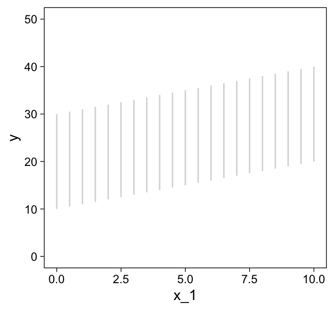
You may have noticed our theme_set() lines at the top. Though we’ll be using a different default theme later in the project, this is the best theme to use for these initial few plots. Okay, now let’s make the more horizontally-oriented grid lines and save them as d2.
d2 <- tibble(index = 1:21 + 21,
x_2 = seq(from = 0, to = 10, length.out = 21)) |>
expand_grid(x_1 = c(0, 10)) |>
mutate(y = 10 + 1 * x_1 + 2 * x_2)
d2 |>
ggplot(aes(x = x_1, y = y, group = index)) +
geom_path(color = "grey85") +
ylim(0, 50)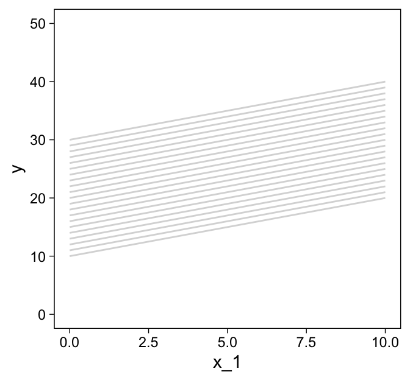
Now combine the two and save them as grid.
grid <- bind_rows(d1, d2)
grid |>
ggplot(aes(x = x_1, y = y, group = index)) +
geom_path(color = "grey85") +
ylim(0, 50)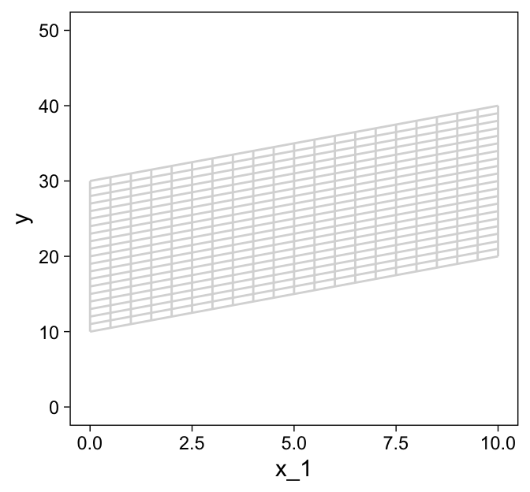
grid |>
ggplot(aes(x = x_2, y = y, group = index)) +
geom_path(color = "grey85") +
ylim(0, 50)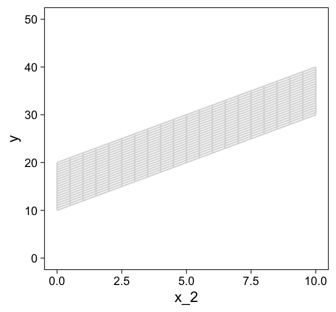
grid |>
ggplot(aes(x = x_1, y = x_2, group = index)) +
geom_path(color = "grey85")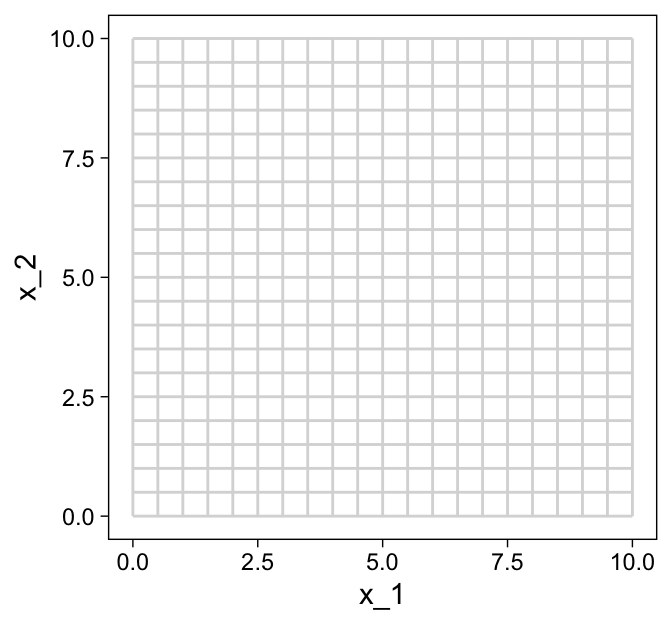
We’re finally ready combine d and grid to make the three 2D scatter plots from Figure 18.1.
d |>
ggplot(aes(x = x_1, y = y)) +
geom_path(data = grid,
aes(group = index),
color = "grey85") +
geom_segment(aes(xend = x_1,
yend = 10 + x_1 + 2 * x_2),
linetype = 3, linewidth = 1/4) +
geom_point(color = "white", fill = "steelblue4",
shape = 21, stroke = 1/10) +
scale_x_continuous(limits = c(0, 10), expand = c(0, 0), breaks = 0:5 * 2) +
scale_y_continuous(limits = c(0, 50), expand = c(0, 0))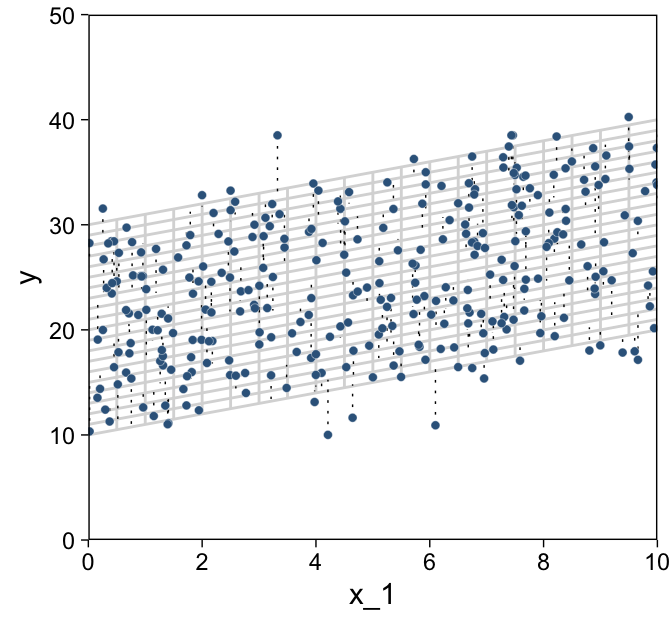
d |>
ggplot(aes(x = x_2, y = y)) +
geom_path(data = grid,
aes(group = index),
color = "grey85") +
geom_segment(aes(xend = x_2,
yend = 10 + x_1 + 2 * x_2),
linetype = 3, linewidth = 1/4) +
geom_point(color = "white", fill = "steelblue4",
shape = 21, stroke = 1/10) +
scale_x_continuous(limits = c(0, 10), expand = c(0, 0), breaks = 0:5 * 2) +
scale_y_continuous(limits = c(0, 50), expand = c(0, 0))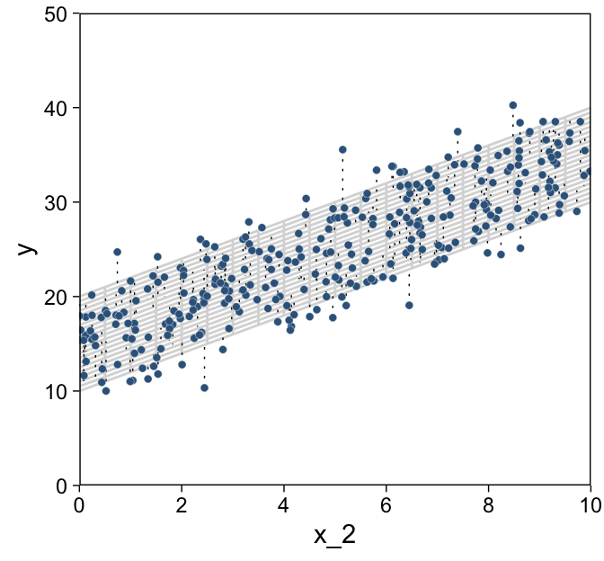
d |>
ggplot(aes(x = x_1, y = x_2)) +
geom_path(data = grid,
aes(group = index),
color = "grey85") +
geom_point(color = "white", fill = "steelblue4",
shape = 21, stroke = 1/10) +
scale_x_continuous(limits = c(0, 10), expand = c(0, 0), breaks = 0:5 * 2) +
scale_y_continuous(limits = c(0, 10), expand = c(0, 0), breaks = 0:5 * 2)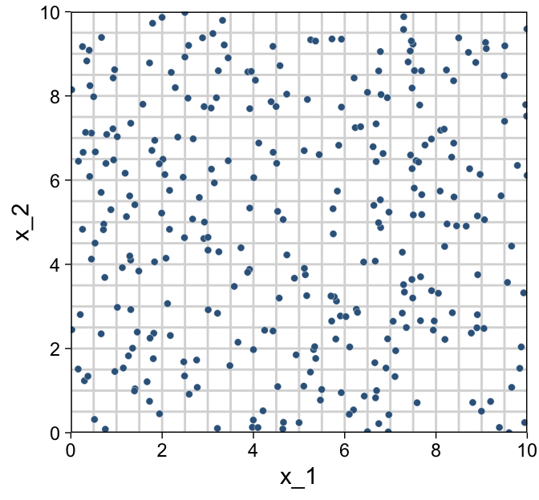
As in previous chapters, I’m not aware that ggplot2 allows for three-dimensional wireframe plots of the kind in the upper left panel. If you’d like to make one in base R, have at it.
For Figure 18.2, the \(x\) variables look to be multivariate normal with a correlation of about -0.95. We can simulate such data with help from the MASS package (Ripley, 2022; Venables & Ripley, 2002).
Sven Hohenstein’s answer to this stats.stackexchange.com question provides the steps for simulating the data. First, we’ll need to specify the desired means and standard deviations for our variables. Then we’ll make a correlation matrix with 1s on the diagonal and the desired correlation coefficient, \(\rho\) on the off-diagonal. Since the correlation matrix is symmetric, both off-diagonal positions are the same. Then we convert the correlation matrix to a covariance matrix.
mus <- c(5, 5)
sds <- c(2, 2)
cors <- matrix(c(1, -0.95,
-0.95, 1),
ncol = 2)
cors [,1] [,2]
[1,] 1.00 -0.95
[2,] -0.95 1.00covs <- sds %*% t(sds) * cors
covs [,1] [,2]
[1,] 4.0 -3.8
[2,] -3.8 4.0Now we’ve defined our means, standard deviations, and covariance matrix, we’re ready to simulate the data with the MASS::mvrnorm() function.
# How many data points would you like to simulate?
n <- 300
set.seed(18.2)
d <- MASS::mvrnorm(n = n,
mu = mus,
Sigma = covs,
empirical = TRUE) |>
as_tibble() |>
set_names("x_1", "x_2") |>
mutate(y = rnorm(n = n, mean = 10 + x_1 + 2 * x_2, sd = 2))Now we have our simulated data in hand, we’re ready for three of the four panels of Figure 18.2.
p1 <- d |>
ggplot(aes(x = x_1, y = y)) +
geom_path(data = grid,
aes(group = index),
color = "grey85") +
geom_segment(aes(xend = x_1,
yend = 10 + x_1 + 2 * x_2),
linetype = 3, linewidth = 1/4) +
geom_point(color = "white", fill = "steelblue4",
shape = 21, stroke = 1/10) +
scale_x_continuous(limits = c(0, 10), expand = c(0, 0), breaks = 0:5 * 2) +
scale_y_continuous(limits = c(0, 50), expand = c(0, 0))
p2 <- d |>
ggplot(aes(x = x_2, y = y)) +
geom_path(data = grid,
aes(group = index),
color = "grey85") +
geom_segment(aes(xend = x_2,
yend = 10 + x_1 + 2 * x_2),
linetype = 3, linewidth = 1/4) +
geom_point(color = "white", fill = "steelblue4",
shape = 21, stroke = 1/10) +
scale_x_continuous(limits = c(0, 10), expand = c(0, 0), breaks = 0:5 * 2) +
scale_y_continuous(limits = c(0, 50), expand = c(0, 0))
p3 <- d |>
ggplot(aes(x = x_1, y = x_2)) +
geom_path(data = grid,
aes(group = index),
color = "grey85") +
geom_point(color = "white", fill = "steelblue4",
shape = 21, stroke = 1/10) +
scale_x_continuous(limits = c(0, 10), expand = c(0, 0), breaks = 0:5 * 2) +
scale_y_continuous(limits = c(0, 10), expand = c(0, 0), breaks = 0:5 * 2)
# Bind them together with patchwork
plot_spacer() + p1 + p2 + p3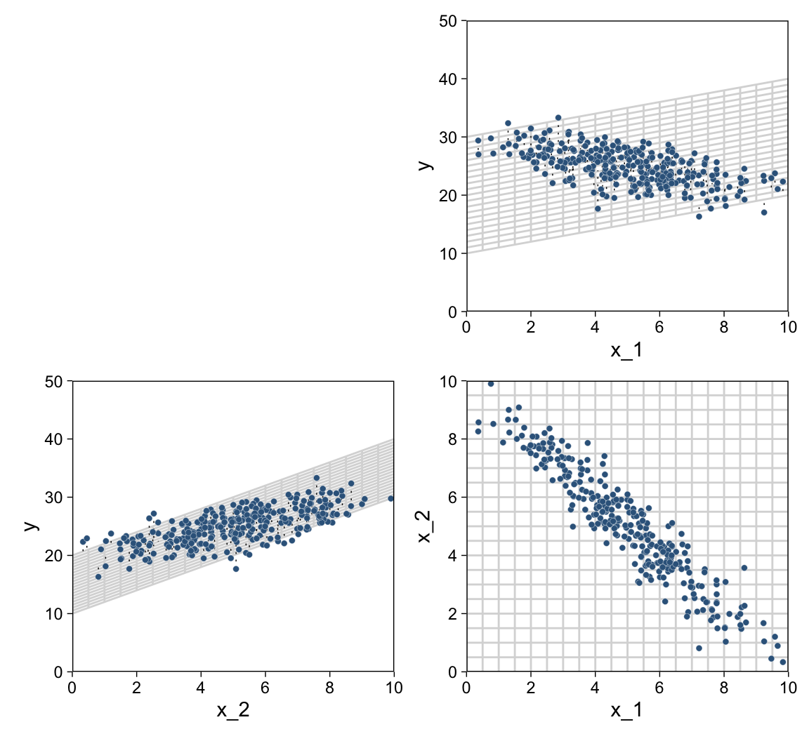
We came pretty close.
18.1.2 The model and implementation
Let’s make our version of the model diagram in Figure 18.4 to get a sense of where we’re going. If you look back to Section 17.2, you’ll see this is just a minor reworking of the code from Figure 17.2.
# Normal density
p1 <- tibble(x = seq(from = -3, to = 3, by = 0.1)) |>
ggplot(aes(x = x, y = (dnorm(x)) / max(dnorm(x)))) +
geom_area(alpha = 0.6, color = "steelblue4", fill = "steelblue4") +
annotate(geom = "text",
x = 0, y = 0.2,
label = "normal",
size = 7) +
annotate(geom = "text",
x = c(0, 1.5), y = 0.6,
label = c("italic(M)[0]", "italic(S)[0]"),
family = "Times", parse = TRUE, size = 7) +
scale_x_continuous(expand = c(0, 0)) +
theme_void() +
theme(axis.line.x = element_line(linewidth = 0.5))
# A second normal density
p2 <- tibble(x = seq(from = -3, to = 3, by = 0.1)) |>
ggplot(aes(x = x, y = (dnorm(x)) / max(dnorm(x)))) +
geom_area(alpha = 0.6, color = "steelblue4", fill = "steelblue4") +
annotate(geom = "text",
x = 0, y = 0.2,
label = "normal",
size = 7) +
annotate(geom = "text",
x = c(0, 1.5), y = 0.6,
label = c("italic(M)[italic(j)]", "italic(S)[italic(j)]"),
family = "Times", parse = TRUE, size = 7) +
scale_x_continuous(expand = c(0, 0)) +
theme_void() +
theme(axis.line.x = element_line(linewidth = 0.5))
## Two annotated arrows
# Save our custom arrow settings
my_arrow <- arrow(angle = 20, length = unit(0.35, "cm"), type = "closed")
p3 <- tibble(x = c(0.33, 1.67),
y = 1,
xend = c(0.67, 1.2),
yend = 0) |>
ggplot(aes(x = x, xend = xend,
y = y, yend = yend)) +
geom_segment(arrow = my_arrow) +
annotate(geom = "text",
x = c(0.35, 1.3), y = 0.5,
label = "'~'",
family = "Times", parse = TRUE, size = 10) +
xlim(0, 2) +
theme_void()
# Exponential density
p4 <- tibble(x = seq(from = 0, to = 1, by = 0.01)) |>
ggplot(aes(x = x, y = (dexp(x, 2) / max(dexp(x, 2))))) +
geom_area(alpha = 0.6, color = "steelblue4", fill = "steelblue4") +
annotate(geom = "text",
x = 0.5, y = 0.2,
label = "exp",
size = 7) +
annotate(geom = "text",
x = 0.5, y = 0.6,
label = "italic(K)",
family = "Times", parse = TRUE, size = 7) +
scale_x_continuous(expand = c(0, 0)) +
theme_void() +
theme(axis.line.x = element_line(linewidth = 0.5))
# Likelihood formula
p5 <- tibble(x = 0.5,
y = 0.25,
label = "beta[0]+sum()[italic(j)]*beta[italic(j)]*italic(x)[italic(ji)]") |>
ggplot(aes(x = x, y = y, label = label)) +
geom_text(family = "Times", parse = TRUE, size = 7) +
scale_x_continuous(expand = c(0, 0), limits = c(0, 1)) +
ylim(0, 1) +
theme_void()
# Half-normal density
p6 <- tibble(x = seq(from = 0, to = 3, by = 0.01)) |>
ggplot(aes(x = x, y = (dnorm(x)) / max(dnorm(x)))) +
geom_area(alpha = 0.6, color = "steelblue4", fill = "steelblue4") +
annotate(geom = "text",
x = 1.5, y = 0.2,
label = "half-normal",
size = 7) +
annotate(geom = "text",
x = 1.5, y = 0.6,
label = "0*','*~italic(S)[sigma]",
family = "Times", parse = TRUE, size = 7) +
scale_x_continuous(expand = c(0, 0)) +
theme_void() +
theme(axis.line.x = element_line(linewidth = 0.5))
# Four annotated arrows
p7 <- tibble(x = c(0.43, 0.43, 1.5, 2.5),
y = c(1, 0.55, 1, 1),
xend = c(0.43, 1.225, 1.5, 1.75),
yend = c(0.8, 0.15, 0.2, 0.2)) |>
ggplot(aes(x = x, xend = xend,
y = y, yend = yend)) +
geom_segment(arrow = my_arrow) +
annotate(geom = "text",
x = c(0.3, 0.7, 1.38, 2), y = c(0.92, 0.22, 0.65, 0.6),
label = c("'~'", "'='", "'='", "'~'"),
family = "Times", parse = TRUE, size = 10) +
annotate(geom = "text",
x = 0.43, y = 0.7,
label = "nu*minute+1",
family = "Times", parse = TRUE, size = 7) +
xlim(0, 3) +
theme_void()
# Student-t density
p8 <- tibble(x = seq(from = -3, to = 3, by = 0.1)) |>
ggplot(aes(x = x, y = (dt(x, 3) / max(dt(x, 3))))) +
geom_area(alpha = 0.6, color = "steelblue4", fill = "steelblue4") +
annotate(geom = "text",
x = 0, y = 0.2,
label = "student t",
size = 7) +
annotate(geom = "text",
x = 0, y = 0.6,
label = "nu~~~mu[italic(i)]~~~sigma",
family = "Times", parse = TRUE, size = 7) +
scale_x_continuous(expand = c(0, 0)) +
theme_void() +
theme(axis.line.x = element_line(linewidth = 0.5))
# The final annotated arrow
p9 <- tibble(x = c(0.375, 0.625),
y = c(1/3, 1/3),
label = c("'~'", "italic(i)")) |>
ggplot(aes(x = x, y = y, label = label)) +
geom_text(family = "Times", parse = TRUE, size = c(10, 7)) +
geom_segment(x = 0.5, xend = 0.5,
y = 1, yend = 0,
arrow = my_arrow) +
xlim(0, 1) +
theme_void()
# Some text
p10 <- tibble(x = 0.5,
y = 0.5,
label = "italic(y[i])") |>
ggplot(aes(x = x, y = y, label = label)) +
geom_text(family = "Times", parse = TRUE, size = 7) +
xlim(0, 1) +
theme_void()
# Define the layout
layout <- c(
area(t = 1, b = 2, l = 3, r = 5),
area(t = 1, b = 2, l = 7, r = 9),
area(t = 4, b = 5, l = 1, r = 3),
area(t = 4, b = 5, l = 5, r = 7),
area(t = 4, b = 5, l = 9, r = 11),
area(t = 3, b = 4, l = 3, r = 9),
area(t = 7, b = 8, l = 5, r = 7),
area(t = 6, b = 7, l = 1, r = 11),
area(t = 9, b = 9, l = 5, r = 7),
area(t = 10, b = 10, l = 5, r = 7))
# Combine, adjust, and display
(p1 + p2 + p4 + p5 + p6 + p3 + p8 + p7 + p9 + p10) +
plot_layout(design = layout) &
ylim(0, 1) &
theme(plot.margin = margin(0, 5.5, 0, 5.5))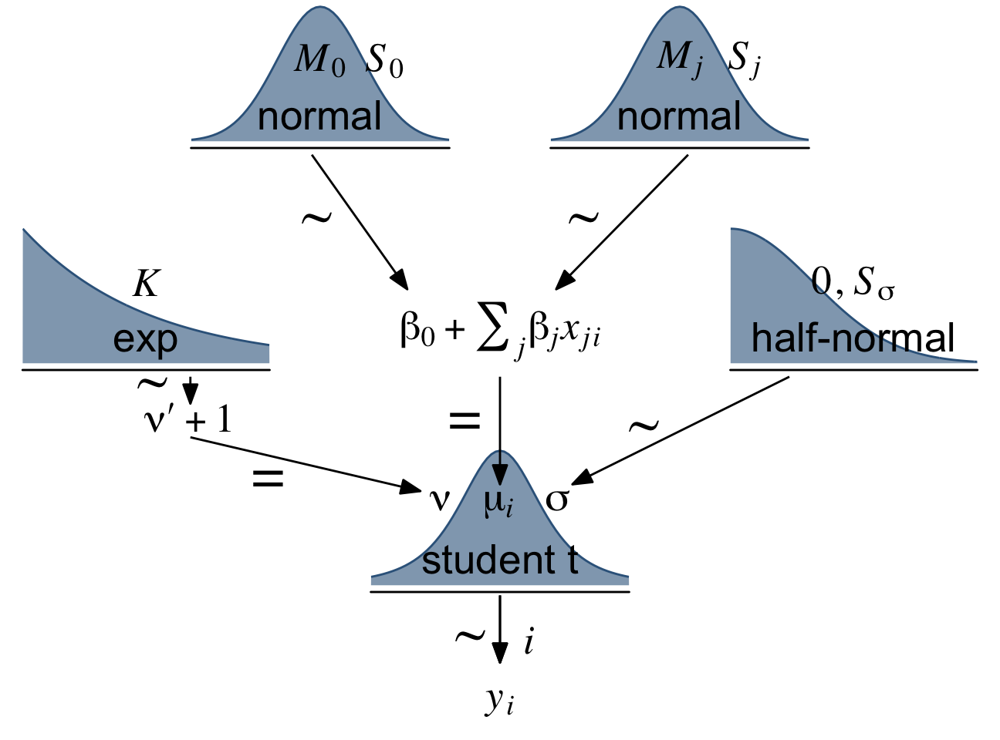
“As with the model for simple linear regression, the Markov Chain Monte Carlo (MCMC) sampling can be more efficient if the data are mean-centered or standardized” (p. 515). We’ll make a custom function to standardize the criterion and predictor values.
standardize <- function(x) {
(x - mean(x)) / sd(x)
}
my_data <- my_data |>
mutate(prcnt_take_z = standardize(PrcntTake),
spend_z = standardize(Spend),
satt_z = standardize(SATT))Now we’re ready to fit the model. As Kruschke pointed out, the priors on the standardized predictors are set with
an arbitrary standard deviation of \(2.0\). This value was chosen because standardized regression coefficients are algebraically constrained to fall between \(−1\) and \(+1\) in least-squares regression,1 and therefore, the regression coefficients will not exceed those limits by much. A normal distribution with standard deviation of \(2.0\) is reasonably flat over the range from \(−1\) to \(+1\). (p. 516)
With data like this, even a prior(normal(0, 1), class = b) would be only mildly regularizing.
This is a good place to emphasize how priors in brms are given classes. If you’d like all parameters within a given class to have the prior, you can just specify one prior argument within that class. For our fit8.1, both parameters of class = b have a normal(0, 2) prior. So we can just include one statement to handle both. Had we wanted different priors for the coefficients for spend_z and prcnt_take_z, we’d need to include two prior() arguments with at least one including a coef argument.
fit18.1 <- brm(
data = my_data,
family = student,
satt_z ~ 1 + spend_z + prcnt_take_z,
prior = c(prior(normal(0, 2), class = Intercept),
prior(normal(0, 2), class = b),
prior(normal(0, 1), class = sigma),
prior(exponential(one_over_twentynine), class = nu)),
chains = 4, cores = 4,
stanvars = stanvar(1/29, name = "one_over_twentynine"),
seed = 18,
file = "fits/fit18.01")Check the model summary.
print(fit18.1) Family: student
Links: mu = identity
Formula: satt_z ~ 1 + spend_z + prcnt_take_z
Data: my_data (Number of observations: 50)
Draws: 4 chains, each with iter = 2000; warmup = 1000; thin = 1;
total post-warmup draws = 4000
Regression Coefficients:
Estimate Est.Error l-95% CI u-95% CI Rhat Bulk_ESS Tail_ESS
Intercept -0.00 0.06 -0.12 0.12 1.00 4427 2772
spend_z 0.23 0.08 0.08 0.39 1.00 3033 2900
prcnt_take_z -1.03 0.08 -1.18 -0.88 1.00 3056 2692
Further Distributional Parameters:
Estimate Est.Error l-95% CI u-95% CI Rhat Bulk_ESS Tail_ESS
sigma 0.42 0.05 0.32 0.53 1.00 3155 2665
nu 33.06 28.65 4.13 108.80 1.00 3303 2724
Draws were sampled using sampling(NUTS). For each parameter, Bulk_ESS
and Tail_ESS are effective sample size measures, and Rhat is the potential
scale reduction factor on split chains (at convergence, Rhat = 1).So when we use a multivariable model, increases in spending now appear associated with increases in SAT scores.
18.1.3 The posterior distribution
Based on Equation 18.1, we can convert the standardized coefficients from our multivariable model back to their original metric as follows:
\[\begin{align*} \beta_0 & = \operatorname{SD}_y \zeta_0 + M_y - \operatorname{SD}_y \sum_j \frac{\zeta_j M_{x_j}}{\operatorname{SD}_{x_j}} \;\;\; \text{and} \\ \beta_j & = \frac{\operatorname{SD}_y \zeta_j}{\operatorname{SD}_{x_j}}. \end{align*}\]
To use them, we’ll first extract the posterior draws
draws <- as_draws_df(fit18.1)
head(draws)# A draws_df: 6 iterations, 1 chains, and 8 variables
b_Intercept b_spend_z b_prcnt_take_z sigma nu Intercept lprior lp__
1 0.0270 0.20 -1.01 0.30 11.9 0.0270 -9.0 -39
2 -0.0481 0.11 -0.97 0.63 50.1 -0.0481 -10.4 -42
3 -0.0023 0.25 -0.92 0.44 12.5 -0.0023 -9.0 -37
4 0.0038 0.20 -1.04 0.45 16.6 0.0038 -9.2 -36
5 0.0974 0.25 -1.06 0.37 8.1 0.0974 -8.9 -37
6 -0.0986 0.31 -1.03 0.44 103.6 -0.0986 -12.2 -38
# ... hidden reserved variables {'.chain', '.iteration', '.draw'}Like we did in Chapter 17, let’s wrap the consequences of Equation 18.1 into two functions.
make_beta_0 <- function(zeta_0, zeta_1, zeta_2, sd_x_1, sd_x_2, sd_y, m_x_1, m_x_2, m_y) {
sd_y * zeta_0 + m_y - sd_y * ((zeta_1 * m_x_1 / sd_x_1) + (zeta_2 * m_x_2 / sd_x_2))
}
make_beta_j <- function(zeta_j, sd_j, sd_y) {
sd_y * zeta_j / sd_j
}After saving a few values, we’re ready to use our custom functions.
sd_x_1 <- sd(my_data$Spend)
sd_x_2 <- sd(my_data$PrcntTake)
sd_y <- sd(my_data$SATT)
m_x_1 <- mean(my_data$Spend)
m_x_2 <- mean(my_data$PrcntTake)
m_y <- mean(my_data$SATT)
draws <- draws |>
mutate(b_0 = make_beta_0(zeta_0 = b_Intercept,
zeta_1 = b_spend_z,
zeta_2 = b_prcnt_take_z,
sd_x_1 = sd_x_1,
sd_x_2 = sd_x_2,
sd_y = sd_y,
m_x_1 = m_x_1,
m_x_2 = m_x_2,
m_y = m_y),
b_1 = make_beta_j(zeta_j = b_spend_z,
sd_j = sd_x_1,
sd_y = sd_y),
b_2 = make_beta_j(zeta_j = b_prcnt_take_z,
sd_j = sd_x_2,
sd_y = sd_y))
glimpse(draws)Rows: 4,000
Columns: 14
$ b_Intercept <dbl> 0.026994060, -0.048095171, -0.002250976, 0.003795643, 0.097366873, -0.098560832, 0.056009955, -0.05465377…
$ b_spend_z <dbl> 0.20012541, 0.11030031, 0.25370149, 0.20443179, 0.25040866, 0.30956214, 0.28168425, 0.32686603, 0.1558936…
$ b_prcnt_take_z <dbl> -1.0123549, -0.9653019, -0.9157986, -1.0350154, -1.0611321, -1.0303720, -1.2127787, -1.1331733, -0.951785…
$ sigma <dbl> 0.3004964, 0.6315442, 0.4378191, 0.4516172, 0.3712107, 0.4384423, 0.4032534, 0.4740616, 0.4307002, 0.3883…
$ nu <dbl> 11.888740, 50.100597, 12.489756, 16.576950, 8.068784, 103.555735, 55.994854, 25.552101, 21.201124, 14.945…
$ Intercept <dbl> 0.026994060, -0.048095171, -0.002250976, 0.003795643, 0.097366873, -0.098560832, 0.056009955, -0.05465377…
$ lprior <dbl> -8.983172, -10.440178, -9.034268, -9.207593, -8.891767, -12.207766, -10.601190, -9.562574, -9.335573, -9.…
$ lp__ <dbl> -38.73318, -42.06162, -37.49989, -35.66156, -37.16132, -38.17846, -39.39805, -36.95189, -36.17239, -35.78…
$ .chain <int> 1, 1, 1, 1, 1, 1, 1, 1, 1, 1, 1, 1, 1, 1, 1, 1, 1, 1, 1, 1, 1, 1, 1, 1, 1, 1, 1, 1, 1, 1, 1, 1, 1, 1, 1, …
$ .iteration <int> 1, 2, 3, 4, 5, 6, 7, 8, 9, 10, 11, 12, 13, 14, 15, 16, 17, 18, 19, 20, 21, 22, 23, 24, 25, 26, 27, 28, 29…
$ .draw <int> 1, 2, 3, 4, 5, 6, 7, 8, 9, 10, 11, 12, 13, 14, 15, 16, 17, 18, 19, 20, 21, 22, 23, 24, 25, 26, 27, 28, 29…
$ b_0 <dbl> 1002.7960, 1021.6642, 973.7251, 1001.8966, 996.5646, 959.6965, 998.2709, 967.4998, 1003.9126, 985.8033, 9…
$ b_1 <dbl> 10.987249, 6.055688, 13.928673, 11.223677, 13.747891, 16.995524, 15.464978, 17.945540, 8.558842, 14.48893…
$ b_2 <dbl> -2.830274, -2.698726, -2.560328, -2.893626, -2.966642, -2.880645, -3.390605, -3.168049, -2.660938, -3.084…Before we make the figure, we’ll update our overall plot theme to cowplot::theme_minimal_grid(). Our overall color scheme and plot aesthetic will be based on some of the plots in Chapter 16, Visualizing uncertainty, of Wilke (2019). As we’ll be making a lot of customized density plots in this chapter, we may as well save those settings, here. We’ll call the function with those settings stat_wilke().
# Update the default theme setting
theme_set(theme_minimal_grid())
# Define the function
stat_wilke <- function(height = 1.25, point_size = 5, ...) {
list(
# For the graded fill
stat_slab(aes(fill_ramp = stat(
cut_cdf_qi(cdf,
.width = c(0.8, 0.95, 0.99),
labels = scales::percent_format(accuracy = 1)))),
fill = "steelblue4", height = height, slab_alpha = 0.75,
...),
# For the top outline and the mode dot
stat_halfeye(.width = 0, point_interval = mode_qi,
color = "chocolate3", fill = NA, height = height,
size = point_size, slab_color = "steelblue4", slab_size = 1/3,
...),
# Fill settings
scale_fill_ramp_discrete(range = c(1, 0.4), na.translate = FALSE),
# Adjust the `guide_legend()` settings
guides(fill_ramp =
guide_legend(
direction = "horizontal",
keywidth = unit(0.925, "cm"),
label.hjust = 0.5,
label.position = "bottom",
label.vjust = -1.75,
title = "posterior prob.",
title.hjust = 0.5,
title.position = "top",
title.vjust = 3)),
# Ensure we're using `cowplot::theme_minimal_hgrid()` as a base theme
theme_minimal_hgrid(),
# Adjust the legend settings
theme(legend.background = element_rect(fill = "white"),
legend.text = element_text(margin = margin(-0.2, 0, -0.2, 0, "cm")),
legend.title = element_text(margin = margin(-0.2, 0, -0.2, 0, "cm")))
)
}Here’s the top panel of Figure 18.5.
# Here are the primary data
draws |>
transmute(Intercept = b_0,
Spend = b_1,
`Percent Take` = b_2,
Scale = sigma * sd_y,
Normality = nu |> log10()) |>
pivot_longer(cols = everything()) |>
# Plot
ggplot(aes(x = value)) +
stat_wilke(normalize = "panels") +
scale_y_continuous(NULL, breaks = NULL) +
xlab(NULL) +
coord_cartesian(ylim = c(-0.01, NA)) +
panel_border() +
theme(legend.position = c(0.72, 0.2)) +
facet_wrap(~ name, ncol = 3, scales = "free")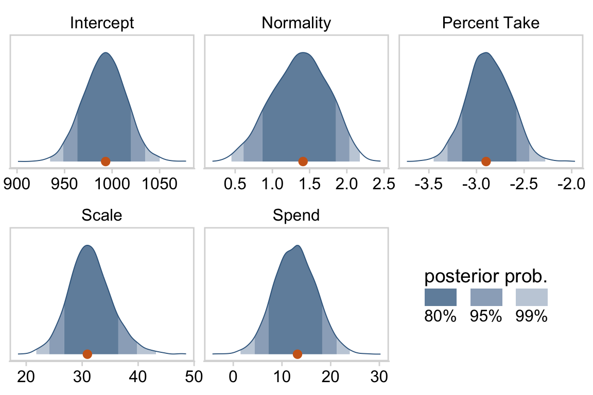
The slope on spending has a mode of about \(13\), which suggests that SAT scores rise by about \(13\) points for every extra \(\$1000\) spent per pupil. The slope on percentage taking the exam (PrcntTake) is also credibly non-zero, with a mode around \(−2.8\), which suggests that SAT scores fall by about \(2.8\) points for every additional \(1\%\) of students who take the test. (p. 517)
If you want those exact modes and, say, 50% intervals around them, you can just use tidybayes::mode_hdi().
draws |>
transmute(Spend = b_1,
`Percent Take` = b_2) |>
pivot_longer(cols = everything()) |>
group_by(name) |>
mode_hdi(value, .width = 0.5)# A tibble: 2 × 7
name value .lower .upper .width .point .interval
<chr> <dbl> <dbl> <dbl> <dbl> <chr> <chr>
1 Percent Take -2.90 -3.04 -2.73 0.5 mode hdi
2 Spend 13.2 9.56 15.4 0.5 mode hdi The brms::bayes_R2() function makes it easy to compute a Bayesian \(R^2\). Simply feed a brm() fit object into bayes_R2() and you’ll get back the posterior mean, \(\textit{SD}\), and 95% intervals.
bayes_R2(fit18.1) Estimate Est.Error Q2.5 Q97.5
R2 0.8132887 0.02334269 0.7556624 0.8429063I’m not going to go into the technical details here, but you should be aware that the Bayeisan \(R^2\) returned from the bayes_R2() function is not calculated the same as it is with OLS. If you want to dive in, check out the paper by Gelman et al. (2019), R-squared for Bayesian regression models. Anyway, if you’d like to view the Bayesian \(R^2\) distribution rather than just get the summaries, specify summary = FALSE, convert the output to a tibble, and plot as usual.
bayes_R2(fit18.1, summary = FALSE) |>
as_tibble() |>
ggplot(aes(x = R2)) +
stat_wilke() +
scale_y_continuous(NULL, breaks = NULL) +
labs(x = NULL,
subtitle = expression(Bayesian~italic(R)^2)) +
coord_cartesian(xlim = c(0, 1),
ylim = c(-0.01, NA)) +
theme(legend.position = c(0.01, 0.8))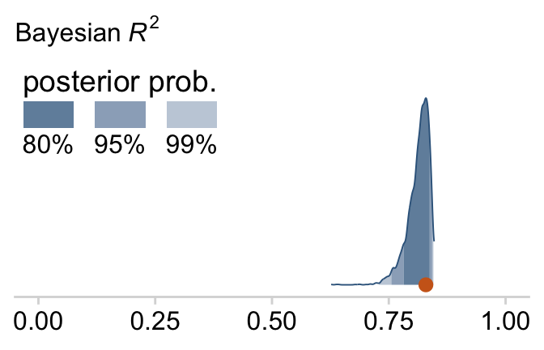
Since the brms::bayes_R2() function is not identical with Kruschke’s method in the text, the results might differ a bit.
We can get a sense of the scatter plots with bayesplot::mcmc_pairs().
color_scheme_set(c("steelblue4", "steelblue4", "steelblue4", "steelblue4", "steelblue4", "steelblue4"))
draws |>
transmute(Intercept = b_0,
Spend = b_1,
`Percent Take` = b_2,
Scale = sigma * sd_y,
Normality = nu |> log10()) |>
mcmc_pairs(diag_fun = "dens",
off_diag_args = list(alpha = 1/8, size = 1/8))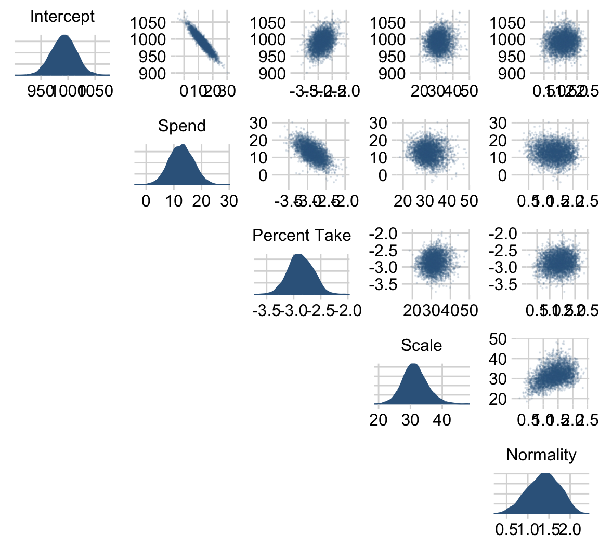
One way to get the Pearson’s correlation coefficients among the parameters is with psych::lowerCor().
draws |>
transmute(Intercept = b_0,
Spend = b_1,
`Percent Take` = b_2,
Scale = sigma * sd_y,
Normality = nu |> log10()) |>
psych::lowerCor(digits = 3) Intrc Spend PrcnT Scale Nrmlt
Intercept 1.000
Spend -0.935 1.000
Percent Take 0.338 -0.606 1.000
Scale 0.059 -0.067 0.081 1.000
Normality 0.068 -0.086 0.109 0.383 1.000If you like more control for customizing your pairs plots, you’ll find a friend in the ggpairs() function from the GGally package (Schloerke et al., 2021). We’re going to blow past the default settings and customize the format for the plots in the upper triangle, the diagonal, and the lower triangle.
my_upper <- function(data, mapping, ...) {
ggplot(data = data, mapping = mapping) +
geom_point(color = "white", fill = "steelblue4",
shape = 21, size = 1/2, stroke = 1/10) +
panel_border()
}
my_diag <- function(data, mapping, ...) {
ggplot(data = data, mapping = mapping) +
stat_wilke(point_size = 2) +
scale_x_continuous(NULL, breaks = NULL) +
scale_y_continuous(NULL, breaks = NULL) +
coord_cartesian(ylim = c(-0.01, NA)) +
panel_border()
}
my_lower <- function(data, mapping, ...) {
# Get the `x` and `y` data to use the other code
x <- eval_data_col(data, mapping$x)
y <- eval_data_col(data, mapping$y)
# Compute the correlations
corr <- cor(x, y, method = "p", use = "pairwise")
# Plot the cor value
ggally_text(
label = formatC(corr, digits = 2, format = "f") |> str_replace("0\\.", "."),
mapping = aes(),
color = "black", size = 4) +
scale_x_continuous(NULL, breaks = NULL) +
scale_y_continuous(NULL, breaks = NULL) +
panel_border()
}Let’s see what we’ve done.
draws |>
transmute(`Intercept~(beta[0])` = b_0,
`Spend~(beta[1])` = b_1,
`Percent~Take~(beta[2])` = b_2,
sigma = sigma * sd_y,
`log[10](nu)` = nu |> log10()) |>
ggpairs(upper = list(continuous = my_upper),
diag = list(continuous = my_diag),
lower = list(continuous = my_lower),
labeller = label_parsed) +
theme(strip.text = element_text(size = 8))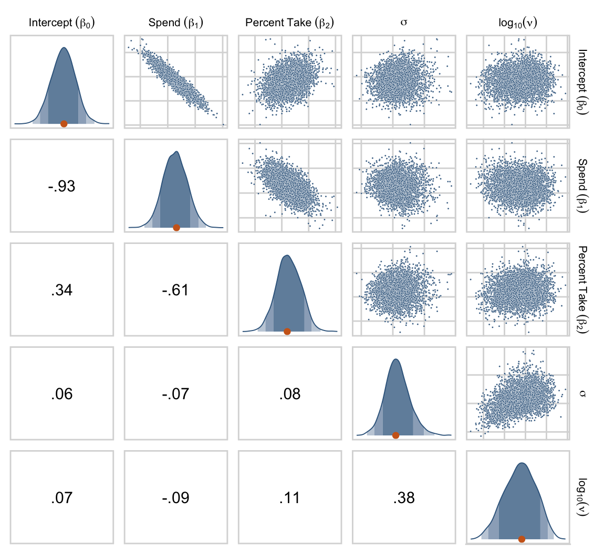
For more ideas on customizing a ggpairs() plot, go here or here or here.
Kruschke finished the subsection with the observation: “Sometimes we are interested in using the linear model to predict \(y\) values for \(x\) values of interest. It is straight forward to generate a large sample of credible \(y\) values for specified \(x\) values” (p. 519).
Like we practiced with in the last chapter, the simplest way to do so in brms is with the fitted() function. For a quick example, say we wanted to know what the model would predict if we were to have a standard-score increase in spending and a simultaneous standard-score decrease in the percent taking the exam. We’d just specify those values in a tibble and feed that tibble into fitted() along with the model.
nd <- tibble(prcnt_take_z = -1,
spend_z = 1)
fitted(fit18.1, newdata = nd) Estimate Est.Error Q2.5 Q97.5
[1,] 1.257462 0.1569767 0.9417023 1.56205418.1.3.1 \(R^2\) is an effect size
Kruschke didn’t use this language in the text, but the \(R^2\) statistic is another kind of effect size. In the conventional OLS framework, \(R^2\) is the proportion of variance in the criterion variable accounted for by the predictors in the model.2 It gives a sense of magnitude in that it ranges from 0 (no variance accounted for) to 1 (all the variance was accounted for). It’s often used to compare models, though personally I’m less interested in the \(R^2\) than I used to be.
18.1.4 Redundant predictors
As a simplified example of correlated predictors, think of just two data points: Suppose \(y = 1\) for \(\langle x_1, x_2 \rangle = \langle 1, 1 \rangle\) and \(y = 2\) for \(\langle x_1, x_2 \rangle = \langle 2, 2 \rangle\). The linear model, \(y = \beta_1 x_1 + \beta_2 x_2\) is supposed to satisfy both data points, and in this case both are satisfied by \(1 = \beta_1 + \beta_2\). Therefore, many different combinations of \(\beta_1\) and \(\beta_2\) satisfy the data. For example, it could be that \(\beta_1 = 2\) and \(\beta_2 = -1\), or \(\beta_1 = 0.5\) and \(\beta_2 = 0.5\), or \(\beta_1 = 0\) and \(\beta_2 = 1\). In other words, the credible values of \(\beta_1\) and \(\beta_2\) are anticorrelated and trade-off to fit the data. (p. 519)
Here are what those data look like. You would not want to fit a regression model with these data.
tibble(x_1 = 1:2,
x_2 = 1:2,
y = 1:2)# A tibble: 2 × 3
x_1 x_2 y
<int> <int> <int>
1 1 1 1
2 2 2 2We can take percentages and turn them into their inverse re-expressed as a proportion.
percent_take <- 37
(100 - percent_take) / 100[1] 0.63Let’s make a redundant predictor and then standardize() it.
my_data <- my_data |>
mutate(prop_not_take = (100 - PrcntTake) / 100) |>
mutate(prop_not_take_z = standardize(prop_not_take))
glimpse(my_data)Rows: 50
Columns: 13
$ State <chr> "Alabama", "Alaska", "Arizona", "Arkansas", "California", "Colorado", "Connecticut", "Delaware", "Florid…
$ Spend <dbl> 4.405, 8.963, 4.778, 4.459, 4.992, 5.443, 8.817, 7.030, 5.718, 5.193, 6.078, 4.210, 6.136, 5.826, 5.483,…
$ StuTeaRat <dbl> 17.2, 17.6, 19.3, 17.1, 24.0, 18.4, 14.4, 16.6, 19.1, 16.3, 17.9, 19.1, 17.3, 17.5, 15.8, 15.1, 17.0, 16…
$ Salary <dbl> 31.144, 47.951, 32.175, 28.934, 41.078, 34.571, 50.045, 39.076, 32.588, 32.291, 38.518, 29.783, 39.431, …
$ PrcntTake <dbl> 8, 47, 27, 6, 45, 29, 81, 68, 48, 65, 57, 15, 13, 58, 5, 9, 11, 9, 68, 64, 80, 11, 9, 4, 9, 21, 9, 30, 7…
$ SATV <dbl> 491, 445, 448, 482, 417, 462, 431, 429, 420, 406, 407, 468, 488, 415, 516, 503, 477, 486, 427, 430, 430,…
$ SATM <dbl> 538, 489, 496, 523, 485, 518, 477, 468, 469, 448, 482, 511, 560, 467, 583, 557, 522, 535, 469, 479, 477,…
$ SATT <dbl> 1029, 934, 944, 1005, 902, 980, 908, 897, 889, 854, 889, 979, 1048, 882, 1099, 1060, 999, 1021, 896, 909…
$ prcnt_take_z <dbl> -1.0178453, 0.4394222, -0.3078945, -1.0925770, 0.3646905, -0.2331628, 1.7098605, 1.2241047, 0.4767880, 1…
$ spend_z <dbl> -1.10086058, 2.24370805, -0.82716069, -1.06123647, -0.67013180, -0.33919708, 2.13657619, 0.82531157, -0.…
$ satt_z <dbl> 0.8430838, -0.4266207, -0.2929676, 0.5223163, -0.8543107, 0.1881836, -0.7741188, -0.9211372, -1.0280597,…
$ prop_not_take <dbl> 0.92, 0.53, 0.73, 0.94, 0.55, 0.71, 0.19, 0.32, 0.52, 0.35, 0.43, 0.85, 0.87, 0.42, 0.95, 0.91, 0.89, 0.…
$ prop_not_take_z <dbl> 1.0178453, -0.4394222, 0.3078945, 1.0925770, -0.3646905, 0.2331628, -1.7098605, -1.2241047, -0.4767880, …Here’s the correlation matrix for Spend, PrcntTake and prop_not_take, as seen on page 520.
my_data |>
select(Spend, PrcntTake, prop_not_take) |>
cor() Spend PrcntTake prop_not_take
Spend 1.0000000 0.5926274 -0.5926274
PrcntTake 0.5926274 1.0000000 -1.0000000
prop_not_take -0.5926274 -1.0000000 1.0000000We’re ready to fit the redundant-predictor model.
fit18.2 <- brm(
data = my_data,
family = student,
satt_z ~ 0 + Intercept + spend_z + prcnt_take_z + prop_not_take_z,
prior = c(prior(normal(0, 2), class = b, coef = Intercept),
prior(normal(0, 2), class = b, coef = spend_z),
prior(normal(0, 2), class = b, coef = prcnt_take_z),
prior(normal(0, 2), class = b, coef = prop_not_take_z),
prior(normal(0, 1), class = sigma),
prior(exponential(one_over_twentynine), class = nu)),
chains = 4, cores = 4,
stanvars = stanvar(1/29, name = "one_over_twentynine"),
seed = 18,
# This will let us use `prior_samples()` later on
sample_prior = "yes",
file = "fits/fit18.02")You might notice a few things about the brm() code. First, we have used the ~ 0 + Intercept + ... syntax instead of the default syntax for intercepts. In normal situations, we would have been in good shape using the typical ~ 1 + ... syntax for the intercept, especially given our use of standardized data. However, since brms version 2.5.0, using the sample_prior argument to draw samples from the prior distribution will no longer allow us to return samples from the typical brms intercept. Bürkner addressed the issue on the Stan forums. As he pointed out, if you want to get prior samples from an intercept, you’ll have to use the alternative syntax. The other thing to point out is that even though we used the same prior on all the predictors, including the intercept, we still explicitly spelled each out with the coef argument. If we hadn’t been explicit like this, we would only get a single b vector from the prior_samples() function. But since we want separate vectors for each of our predictors, we used the verbose code. If you’re having a difficult time understanding these two points, experiment. Fit the model in a few different ways with either the typical or the alternative intercept syntax and with either the verbose prior code or the simplified prior(normal(0, 2), class = b) code. And after each, execute prior_samples(fit18.2). You’ll see.
Let’s move on. Kruschke mentioned high autocorrelations in the prose. Here are the autocorrelation plots for our \(\beta\)’s.
color_scheme_set(c("steelblue4", "steelblue4", "chocolate3", "steelblue4", "steelblue4", "steelblue4"))
draws <- as_draws_df(fit18.2)
draws |>
mutate(chain = .chain) |>
mcmc_acf(pars = vars(b_Intercept:b_prop_not_take_z),
lags = 10)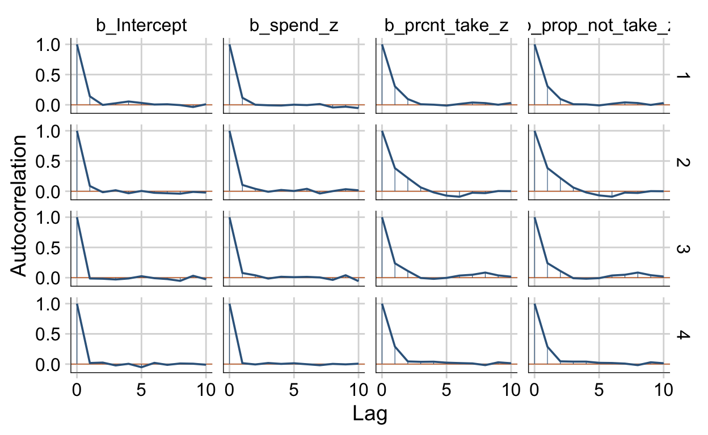
Looks like HMC made a big difference. The \(N_\textit{eff}/N\) ratios weren’t terrible, either.
color_scheme_set(c("steelblue4", "steelblue4", "chocolate3", "steelblue4", "chocolate3", "chocolate3"))
neff_ratio(fit18.2)[1:6] |>
mcmc_neff() +
yaxis_text(hjust = 0)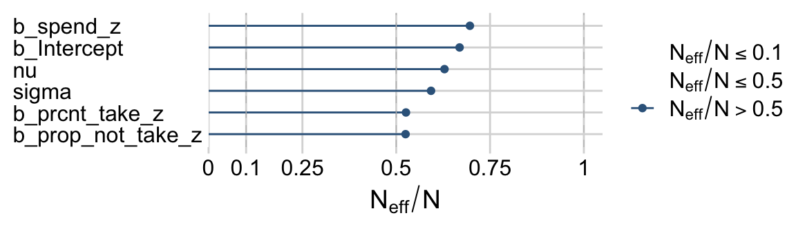
Earlier we computed the correlations among the correlation matrix for the predictors, as Kruschke displayed on page 520. Here we’ll compute the correlations among their coefficients in the model. The brms::vcov() function returns a variance/covariance matrix–or a correlation matrix when you set correlation = TRUE–of the population-level parameters (i.e., the fixed effects). It returns the values to a decadent level of precision, so we’ll simplify the output with round().
vcov(fit18.2, correlation = TRUE) |>
round(digits = 3) Intercept spend_z prcnt_take_z prop_not_take_z
Intercept 1.000 -0.024 -0.008 -0.009
spend_z -0.024 1.000 0.001 0.035
prcnt_take_z -0.008 0.001 1.000 0.998
prop_not_take_z -0.009 0.035 0.998 1.000The correlations among the redundant predictors were still very high.
If any of the nondiagonal correlations are high (i.e., close to \(+1\) or close to \(−1\)), be careful when interpreting the posterior distribution. Here, we can see that the correlation of PrcntTake and PropNotTake is \(−1.0\), which is an immediate sign of redundant predictors. (p. 520)
You can really get a sense of the silliness of the parameters if you plot them. We’ll use stat_wilke() to get a sense of densities and summaries of the \(\beta\)’s.
draws |>
pivot_longer(cols = b_Intercept:b_prop_not_take_z) |>
# This line isn't necessary, but it does allow us to arrange the parameters on the y-axis
mutate(name = factor(name,
levels = c("b_prop_not_take_z", "b_prcnt_take_z", "b_spend_z", "b_Intercept"))) |>
ggplot(aes(x = value, y = name)) +
geom_vline(xintercept = 0, color = "white") +
stat_wilke(normalize = "xy", point_size = 3) +
labs(x = NULL,
y = NULL) +
coord_cartesian(xlim = c(-5, 5),
ylim = c(1.4, NA)) +
theme(axis.text.y = element_text(hjust = 0),
legend.position = c(.76, .8))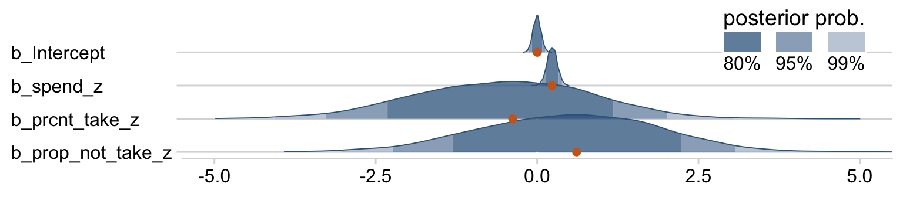
Yeah, on the standardized scale those are some ridiculous estimates. Let’s update our make_beta_0() function.
make_beta_0 <- function(zeta_0, zeta_1, zeta_2, zeta_3, sd_x_1, sd_x_2, sd_x_3, sd_y, m_x_1, m_x_2, m_x_3, m_y) {
sd_y * zeta_0 + m_y - sd_y * ((zeta_1 * m_x_1 / sd_x_1) + (zeta_2 * m_x_2 / sd_x_2) + (zeta_3 * m_x_3 / sd_x_3))
}sd_x_1 <- sd(my_data$Spend)
sd_x_2 <- sd(my_data$PrcntTake)
sd_x_3 <- sd(my_data$prop_not_take)
sd_y <- sd(my_data$SATT)
m_x_1 <- mean(my_data$Spend)
m_x_2 <- mean(my_data$PrcntTake)
m_x_3 <- mean(my_data$prop_not_take)
m_y <- mean(my_data$SATT)
draws <- draws |>
transmute(Intercept = make_beta_0(zeta_0 = b_Intercept,
zeta_1 = b_spend_z,
zeta_2 = b_prcnt_take_z,
zeta_3 = b_prop_not_take_z,
sd_x_1 = sd_x_1,
sd_x_2 = sd_x_2,
sd_x_3 = sd_x_3,
sd_y = sd_y,
m_x_1 = m_x_1,
m_x_2 = m_x_2,
m_x_3 = m_x_3,
m_y = m_y),
Spend = make_beta_j(zeta_j = b_spend_z,
sd_j = sd_x_1,
sd_y = sd_y),
`Percent Take` = make_beta_j(zeta_j = b_prcnt_take_z,
sd_j = sd_x_2,
sd_y = sd_y),
`Proportion not Take` = make_beta_j(zeta_j = b_prop_not_take_z,
sd_j = sd_x_3,
sd_y = sd_y),
Scale = sigma * sd_y,
Normality = nu |> log10())
glimpse(draws)Rows: 4,000
Columns: 6
$ Intercept <dbl> 122.66936, 1257.28446, 1162.36500, 321.78647, 333.41516, 367.18981, -203.47718, 341.10287, 1183.78…
$ Spend <dbl> 19.425517, 8.087663, 12.788947, 14.379854, 14.727701, 11.102196, 12.569069, 10.999680, 15.315984, …
$ `Percent Take` <dbl> 5.3628081, -5.3074984, -4.6274839, 3.6404916, 3.5998771, 3.4654368, 9.1525632, 3.7074152, -5.08686…
$ `Proportion not Take` <dbl> 837.241422, -247.354725, -182.653917, 667.664069, 649.462969, 628.165096, 1186.191085, 665.158126,…
$ Scale <dbl> 34.59677, 34.16473, 29.37272, 33.68939, 35.96708, 30.96175, 30.23583, 28.92784, 34.30049, 29.43571…
$ Normality <dbl> 1.6028997, 1.5811649, 1.4106891, 1.6795349, 1.4360806, 1.9791147, 1.5240680, 1.5287144, 1.0593286,…Now we’ve done the conversions, here are the histograms of Figure 18.6.
draws |>
pivot_longer(cols = everything()) |>
ggplot(aes(x = value)) +
stat_wilke(normalize = "panels") +
scale_y_continuous(NULL, breaks = NULL) +
xlab(NULL) +
coord_cartesian(ylim = c(-0.01, NA)) +
panel_border() +
theme(axis.text.x = element_text(size = 8),
legend.position = "none") +
facet_wrap(~ name, ncol = 3, scales = "free")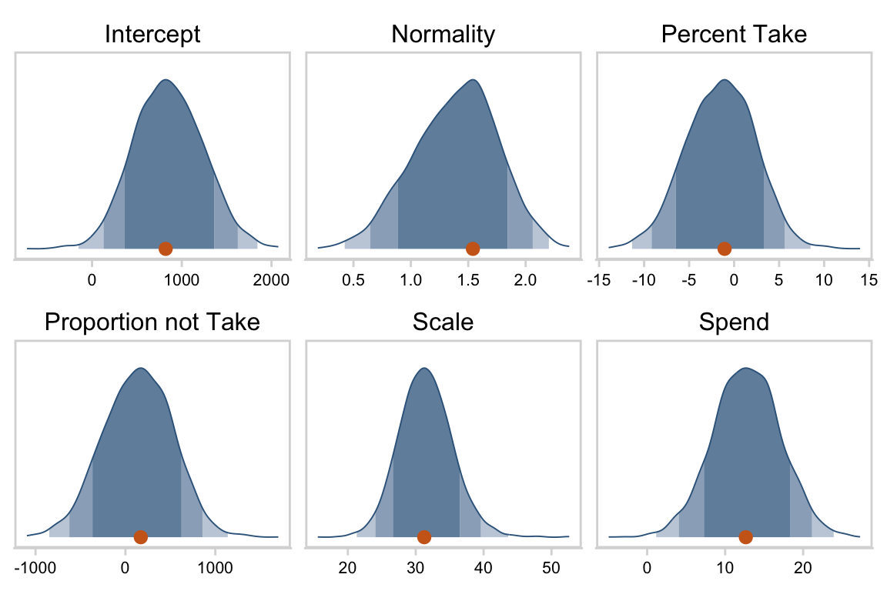
Their scatter plots are as follows.
draws |>
set_names("Intercept~(beta[0])", "Spend~(beta[1])", "Percent~Take~(beta[2])", "Percent~Not~Take~(beta[3])", "sigma", "log[10](nu)") |>
ggpairs(upper = list(continuous = my_upper),
diag = list(continuous = my_diag),
lower = list(continuous = my_lower),
labeller = label_parsed) +
theme(strip.text = element_text(size = 7))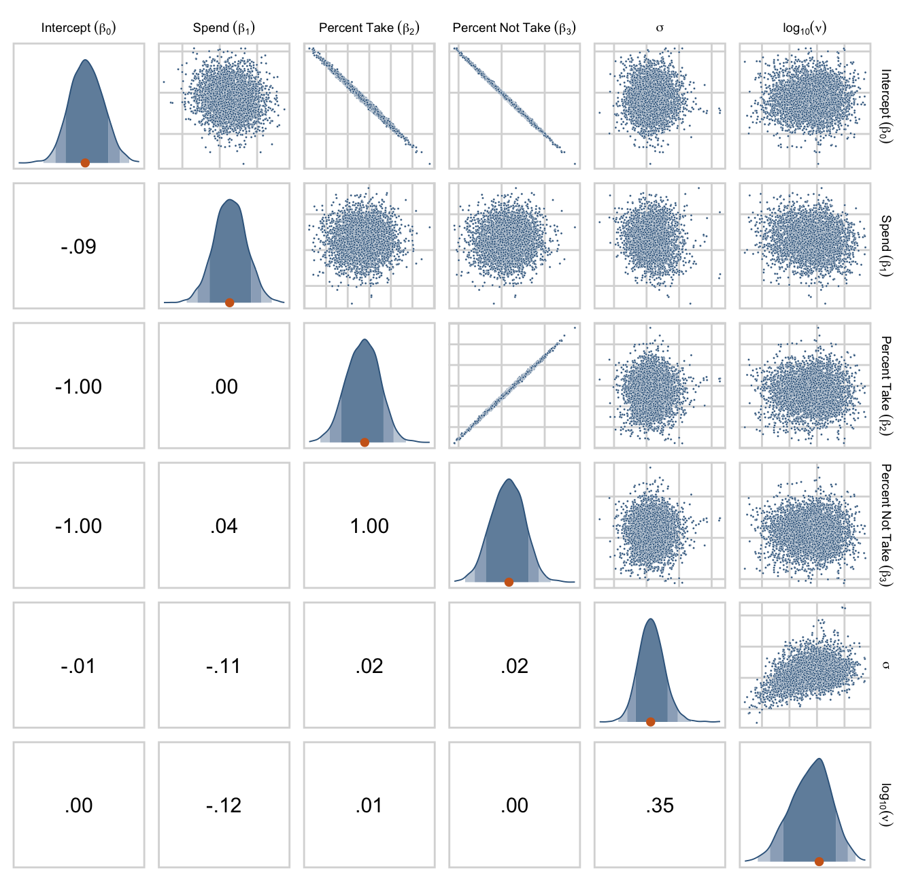
Figure 18.7 is all about the prior predictive distribution. Here we’ll extract the priors with prior_samples() and wrangle all in one step.
prior_draws <- prior_draws(fit18.2) |>
transmute(Intercept = make_beta_0(zeta_0 = b_Intercept,
zeta_1 = b_spend_z,
zeta_2 = b_prcnt_take_z,
zeta_3 = b_prop_not_take_z,
sd_x_1 = sd_x_1,
sd_x_2 = sd_x_2,
sd_x_3 = sd_x_3,
sd_y = sd_y,
m_x_1 = m_x_1,
m_x_2 = m_x_2,
m_x_3 = m_x_3,
m_y = m_y),
Spend = make_beta_j(zeta_j = b_spend_z,
sd_j = sd_x_1,
sd_y = sd_y),
`Percent Take` = make_beta_j(zeta_j = b_prcnt_take_z,
sd_j = sd_x_2,
sd_y = sd_y),
`Proportion not Take` = make_beta_j(zeta_j = b_prop_not_take_z,
sd_j = sd_x_3,
sd_y = sd_y),
Scale = sigma * sd_y,
Normality = nu |> log10())
glimpse(prior_draws)Rows: 4,000
Columns: 6
$ Intercept <dbl> 470.44768, 361.84274, 630.54102, 714.16293, 303.81450, 1279.56208, 521.86704, -292.81301, 20.92921…
$ Spend <dbl> 90.023915, -147.549161, 22.589396, -80.614994, 83.162648, -70.028472, 197.206803, 203.713941, -60.…
$ `Percent Take` <dbl> -5.833752506, 15.355950120, -8.150241507, 4.285607887, 0.001874701, -1.548935461, -2.409700321, 0.…
$ `Proportion not Take` <dbl> 215.05920, 1200.62589, 481.51652, 742.97514, 323.28416, 179.83377, -719.76891, 56.56846, 1974.4601…
$ Scale <dbl> 63.049614, 131.838995, 57.343599, 88.408305, 118.225028, 93.323836, 97.005639, 75.624478, 90.12528…
$ Normality <dbl> 1.674171090, 1.650131881, 1.499100405, 0.736467465, 0.885937798, 1.313607024, 1.591804369, 1.90856…Now we’ve wrangled the priors, we’re ready to make the histograms at the top of Figure 18.7.
prior_draws |>
pivot_longer(cols = everything()) |>
ggplot(aes(x = value)) +
stat_wilke(normalize = "panels") +
scale_y_continuous(NULL, breaks = NULL) +
xlab(NULL) +
coord_cartesian(ylim = c(-0.01, NA)) +
panel_border() +
theme(axis.text.x = element_text(size = 8),
legend.position = "none") +
facet_wrap(~ name, ncol = 3, scales = "free")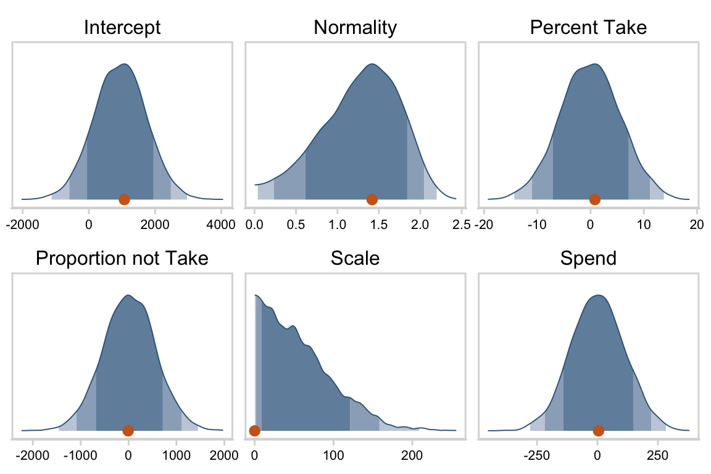
Since we used the half-Gaussian prior for our \(\sigma\), our Scale histogram looks different from Kruschke’s. Otherwise, everything’s on the up and up. Here are the pairs plots at the bottom of Figure 18.7.
prior_draws |>
set_names("Intercept~(beta[0])", "Spend~(beta[1])", "Percent~Take~(beta[2])", "Percent~Not~Take~(beta[3])", "sigma", "log[10](nu)") |>
ggpairs(upper = list(continuous = my_upper),
diag = list(continuous = my_diag),
lower = list(continuous = my_lower),
labeller = label_parsed) +
theme(strip.text = element_text(size = 7))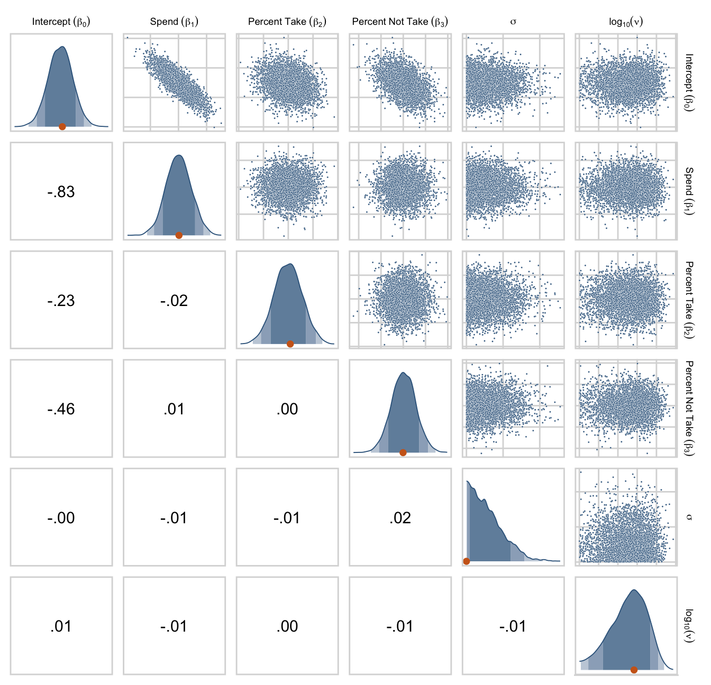
At the top of page 523, Kruschke asked us to “notice that the posterior distribution in Figure 18.6 has ranges for the redundant parameters that are only a little smaller than their priors.” With a little wrangling, we can compare the prior/posterior distributions for our redundant parameters more directly.
draws |>
pivot_longer(cols = everything(),
names_to = "parameter",
values_to = "posterior") |>
bind_cols(
prior_draws |>
pivot_longer(cols = everything()) |>
transmute(prior = value)
) |>
pivot_longer(cols = -parameter) |>
filter(parameter %in% c("Percent Take", "Proportion not Take")) |>
ggplot(aes(x = value)) +
stat_wilke(normalize = "panels") +
scale_y_continuous(NULL, breaks = NULL) +
scale_fill_viridis_d(option = "D", begin = 0.35, end = 0.65) +
xlab(NULL) +
coord_cartesian(ylim = c(-0.01, NA)) +
panel_border() +
theme(legend.position = "none") +
facet_grid(name ~ parameter, scales = "free")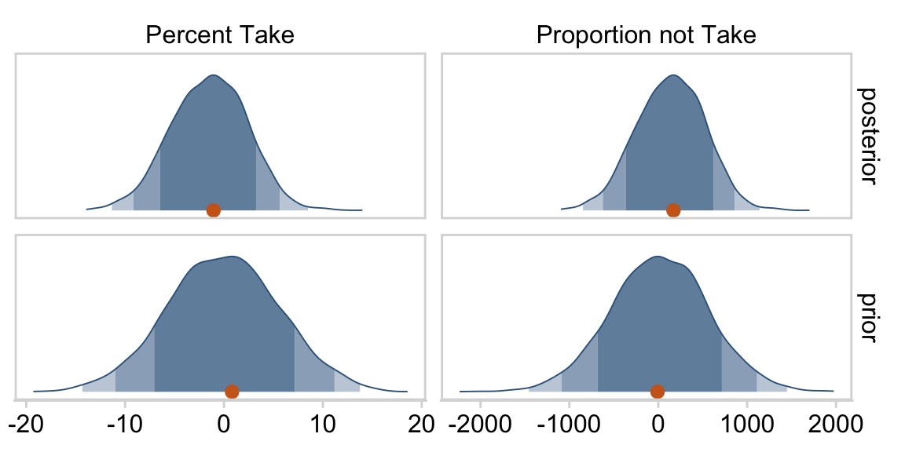
Kruschke was right. The posterior distributions are only slightly narrower than the priors for those two. With our combination of data and model, we learned virtually nothing beyond the knowledge we encoded in those priors.
Kruschke mentioned SEM as a possible solution to multicollinearity. brms isn’t fully capable of SEM, at the moment (see issue #304), but its multivariate syntax (Bürkner, 2022b) does allow for path analysis and IRT models. However, you can currently fit a variety of Bayesian SEMs with the blavaan package (Merkle et al., 2022; Merkle & Rosseel, 2018). I’m not aware of any textbooks highlighting blavaan. If you know of any, please share.
18.2 Multiplicative interaction of metric predictors
From page 526:
Formally, interactions can have many different specific functional forms. We will consider multiplicative interaction. This means that the nonadditive interaction is expressed by multiplying the predictors. The predicted value is a weighted combination of the individual predictors and, additionally, the multiplicative product of the predictors. For two metric predictors, regression with multiplicative interaction has these algebraically equivalent expressions:
\[\begin{align*} \mu & = \beta_0 + \beta_1 x_1 + \beta_2 x_2 + \beta_{1 \times 2} x_1 x_2 \\ & = \beta_0 + \underbrace{(\beta_1 + \beta_{1 \times 2} x_2)}_{\text{slope of } x_1} x_1 + \beta_2 x_2 \\ & = \beta_0 + \beta_1 x_1 + \underbrace{(\beta_2 + \beta_{1 \times 2} x_1)}_{\text{slope of } x_2} x_2. \end{align*}\]
We can’t quite reproduce Figure 18.8 with our ggplot2 repertoire. But we can capture some of Figure 18.8 with the geom_raster() approach we used in Chapter 15.
d <- crossing(x1 = seq(from = 0, to = 10, by = 0.5),
x2 = seq(from = 0, to = 10, by = 0.5)) |>
mutate(y = 10 + -1 * x1 + 2 * x2 + (0.2) * x1 * x2)
p1 <- d |>
ggplot(aes(x = x1, y = x2)) +
geom_raster(aes(fill = y)) +
scale_x_continuous(expression(x[1]), breaks = 0:5 * 2, expand = c(0, 0)) +
scale_y_continuous(expression(x[2]), breaks = 0:5 * 2, expand = c(0, 0),
position = "right") +
# These are all variants of `"steelblue4"`
scale_fill_gradient2(low = "#0a141b", mid = "#36648B", high = "#d6e0e7",
midpoint = 20, limits = c(0, 40)) +
labs(subtitle = expression(y==10+-1*x[1]+2*x[2]+(0.2)*x[1]*x[2])) +
coord_equal() +
theme(legend.position = "left",
plot.subtitle = element_text(size = 8))
p2 <- d |>
ggplot(aes(x = x1, y = x2)) +
geom_raster(aes(fill = y)) +
geom_hline(yintercept = c(0:5 * 2), color = "chocolate3", linewidth = 1) +
scale_x_continuous(expression(x[1]), breaks = 0:5 * 2, expand = c(0, 0)) +
scale_y_continuous(expression(x[2]), breaks = 0:5 * 2, expand = c(0, 0),
position = "right") +
scale_fill_gradient2(low = "#0a141b", mid = "#36648B", high = "#d6e0e7",
midpoint = 20, limits = c(0, 40)) +
labs(subtitle = expression(y==10+(-1+0.2*x[2])*x[1]+2*x[2])) +
coord_equal() +
theme(legend.position = "none",
plot.subtitle = element_text(size = 8))
p3 <- d |>
ggplot(aes(x = x1, y = x2)) +
geom_raster(aes(fill = y)) +
geom_vline(xintercept = c(0:5 * 2), color = "chocolate3", linewidth = 1) +
scale_x_continuous(expression(x[1]), breaks = 0:5 * 2, expand = c(0, 0)) +
scale_y_continuous(expression(x[2]), breaks = 0:5 * 2, expand = c(0, 0),
position = "right") +
scale_fill_gradient2(low = "#0a141b", mid = "#36648B", high = "#d6e0e7",
midpoint = 20, limits = c(0, 40)) +
labs(subtitle = expression(y==10+-1*x[1]+(2+0.2*x[1])*x[2])) +
coord_equal() +
theme(legend.position = "none",
plot.subtitle = element_text(size = 8))
p1 + p2 + p3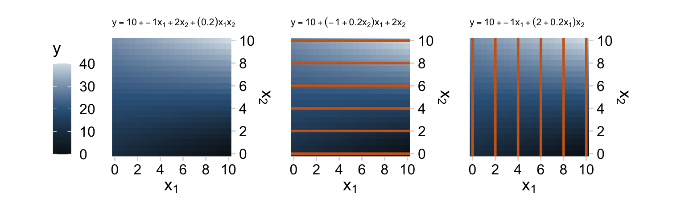
As Kruschke wrote: “Great care must be taken when interpreting the coefficients of a model that includes interaction terms (Braumoeller, 2004). In particular, low-order terms are especially difficult to interpret when higher-order interactions are present” (p. 526). When in doubt, plot.
18.2.1 An example
Presuming we’re still just modeling \(\mu\) with two predictors, we can express the formula with the interaction term as
\[ \mu = \beta_0 + \beta_1 + \beta_2 x_2 + \underbrace{\beta_{1 \times 2}}_{\beta_3} \underbrace{x_2 x_1 }_{x_3}. \]
With brms, you can specify an interaction with either the x_i*x_j syntax or the x_i:x_j syntax. I typically use x_i:x_j. It’s often the case that you can just make the interaction term right in the model formula. But since we’re fitting the model with standardized predictors and then using Kruschke’s equations to convert the parameters back to the unstandardized metric, it seems easier to make the interaction term in the data, first.
my_data <- my_data |>
# Make x_3
mutate(interaction = Spend * PrcntTake) |>
mutate(interaction_z = standardize(interaction))Now we’ll fit the model.
fit18.3 <- brm(
data = my_data,
family = student,
satt_z ~ 1 + spend_z + prcnt_take_z + interaction_z,
prior = c(prior(normal(0, 2), class = Intercept),
prior(normal(0, 2), class = b),
prior(normal(0, 1), class = sigma),
prior(exponential(one_over_twentynine), class = nu)),
chains = 4, cores = 4,
stanvars = stanvar(1/29, name = "one_over_twentynine"),
seed = 18,
file = "fits/fit18.03")Note that even though an interaction term might seem different kind from other regression terms, it’s just another coefficient of class = b as far as the prior() statements are concerned. Anyway, let’s inspect the summary().
summary(fit18.3) Family: student
Links: mu = identity
Formula: satt_z ~ 1 + spend_z + prcnt_take_z + interaction_z
Data: my_data (Number of observations: 50)
Draws: 4 chains, each with iter = 2000; warmup = 1000; thin = 1;
total post-warmup draws = 4000
Regression Coefficients:
Estimate Est.Error l-95% CI u-95% CI Rhat Bulk_ESS Tail_ESS
Intercept -0.00 0.06 -0.12 0.12 1.00 3204 2553
spend_z 0.04 0.14 -0.24 0.32 1.00 1679 1939
prcnt_take_z -1.46 0.29 -2.01 -0.88 1.00 1527 1871
interaction_z 0.58 0.37 -0.17 1.27 1.00 1446 1847
Further Distributional Parameters:
Estimate Est.Error l-95% CI u-95% CI Rhat Bulk_ESS Tail_ESS
sigma 0.41 0.05 0.32 0.52 1.00 2661 2463
nu 34.30 29.61 4.46 112.83 1.00 2349 2173
Draws were sampled using sampling(NUTS). For each parameter, Bulk_ESS
and Tail_ESS are effective sample size measures, and Rhat is the potential
scale reduction factor on split chains (at convergence, Rhat = 1).Like Kruschke reported on page 528, here’s the correlation matrix for the (unstandardized) predictors.
my_data |>
select(Spend, PrcntTake, interaction) |>
cor() Spend PrcntTake interaction
Spend 1.0000000 0.5926274 0.7750251
PrcntTake 0.5926274 1.0000000 0.9511463
interaction 0.7750251 0.9511463 1.0000000The correlations among the \(\zeta\) coefficients are about as severe.
vcov(fit18.3, correlation = TRUE) |>
round(digits = 3) Intercept spend_z prcnt_take_z interaction_z
Intercept 1.000 0.035 0.011 -0.021
spend_z 0.035 1.000 0.703 -0.830
prcnt_take_z 0.011 0.703 1.000 -0.961
interaction_z -0.021 -0.830 -0.961 1.000We can see that the interaction variable is strongly correlated with both predictors. Therefore, we know that there will be strong trade-offs among the regression coefficients, and the marginal distributions of single regression coefficients might be much wider than when there was no interaction included. (p. 528)
Let’s convert the posterior draws to the unstandardized metric.
sd_x_3 <- sd(my_data$interaction)
m_x_3 <- mean(my_data$interaction)
draws <- as_draws_df(fit18.3) |>
transmute(Intercept = make_beta_0(zeta_0 = b_Intercept,
zeta_1 = b_spend_z,
zeta_2 = b_prcnt_take_z,
zeta_3 = b_interaction_z,
sd_x_1 = sd_x_1,
sd_x_2 = sd_x_2,
sd_x_3 = sd_x_3,
sd_y = sd_y,
m_x_1 = m_x_1,
m_x_2 = m_x_2,
m_x_3 = m_x_3,
m_y = m_y),
Spend = make_beta_j(zeta_j = b_spend_z,
sd_j = sd_x_1,
sd_y = sd_y),
`Percent Take` = make_beta_j(zeta_j = b_prcnt_take_z,
sd_j = sd_x_2,
sd_y = sd_y),
`Spend : Percent Take` = make_beta_j(zeta_j = b_interaction_z,
sd_j = sd_x_3,
sd_y = sd_y),
Scale = sigma * sd_y,
Normality = nu |> log10())
glimpse(draws)Rows: 4,000
Columns: 6
$ Intercept <dbl> 1123.5627, 999.7003, 1058.5250, 1054.7359, 1040.4823, 1037.2210, 1046.2490, 1067.6163, 1024.7346,…
$ Spend <dbl> -12.068212764, 11.005935782, 0.555274771, 1.761617028, 5.068454031, 4.262030318, 6.158353911, 1.5…
$ `Percent Take` <dbl> -4.551287, -4.149927, -3.833664, -4.858345, -3.506599, -4.278262, -4.614290, -4.538624, -4.642817…
$ `Spend : Percent Take` <dbl> 0.32391574, 0.21036666, 0.18853160, 0.30545097, 0.09753850, 0.23584412, 0.19803514, 0.22196648, 0…
$ Scale <dbl> 33.53031, 34.12028, 37.96844, 25.36543, 32.37235, 29.82563, 30.28481, 30.22379, 29.90316, 33.5878…
$ Normality <dbl> 1.0288524, 1.9242636, 1.6627513, 1.3348683, 0.9983272, 1.1368009, 1.2418720, 1.5917472, 1.7070865…Now we’ve done the conversions, here are our versions of the histograms of Figure 18.9.
draws |>
pivot_longer(cols = everything()) |>
ggplot(aes(x = value)) +
stat_wilke(normalize = "panels") +
scale_y_continuous(NULL, breaks = NULL) +
xlab(NULL) +
coord_cartesian(ylim = c(-0.01, NA)) +
panel_border() +
theme(legend.position = "none") +
facet_wrap(~ name, scales = "free", ncol = 3)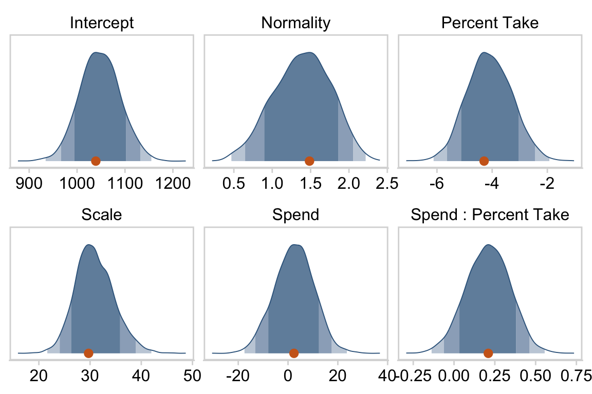
“To properly understand the credible slopes on the two predictors, we must consider the credible slopes on each predictor as a function of the value of the other predictor” (p. 528). This is our motivation for the middle panel of Figure 18.9. To make it, we’ll need to expand our post with expand_grid(), wrangle a bit, and plot with geom_pointrange().
# This will come in handy in `expand_grid()`
bounds <- range(my_data$PrcntTake)
# Wrangle
p1 <- draws |>
expand_grid(PrcntTake = seq(from = bounds[1], to = bounds[2], length.out = 20)) |>
mutate(slope = Spend + `Spend : Percent Take` * PrcntTake) |>
group_by(PrcntTake) |>
median_hdi(slope) |>
# Plot
ggplot(aes(x = PrcntTake, y = slope,
ymin = .lower, ymax = .upper)) +
geom_hline(yintercept = 0, color = "grey25", linetype = 2) +
geom_pointrange(color = "steelblue4", fatten = 6, fill = "chocolate3",
shape = 21, stroke = 1/10) +
labs(x = "Value of prcnt_take",
y = "Slope on spend",
title = expression("Slope on spend is "~beta[1]+beta[3]%.%prcnt_take))We’ll follow the same basic order of operations for the final panel and then bind them together with patchwork.
bounds <- range(my_data$Spend)
p2 <- draws |>
select(`Percent Take`, `Spend : Percent Take`) |>
expand_grid(Spend = seq(from = bounds[1], to = bounds[2], length.out = 20)) |>
mutate(slope = `Percent Take` + `Spend : Percent Take` * Spend) |>
group_by(Spend) |>
median_hdi(slope) |>
ggplot(aes(x = Spend, y = slope,
ymin = .lower, ymax = .upper)) +
geom_pointrange(color = "steelblue4", fatten = 6, fill = "chocolate3",
shape = 21, stroke = 1/10) +
labs(x = "Value of spend",
y = "Slope on prcnt_take",
title = expression("Slope on prcnt_take is "~beta[2]+beta[3]%.%spend))
p1 / p2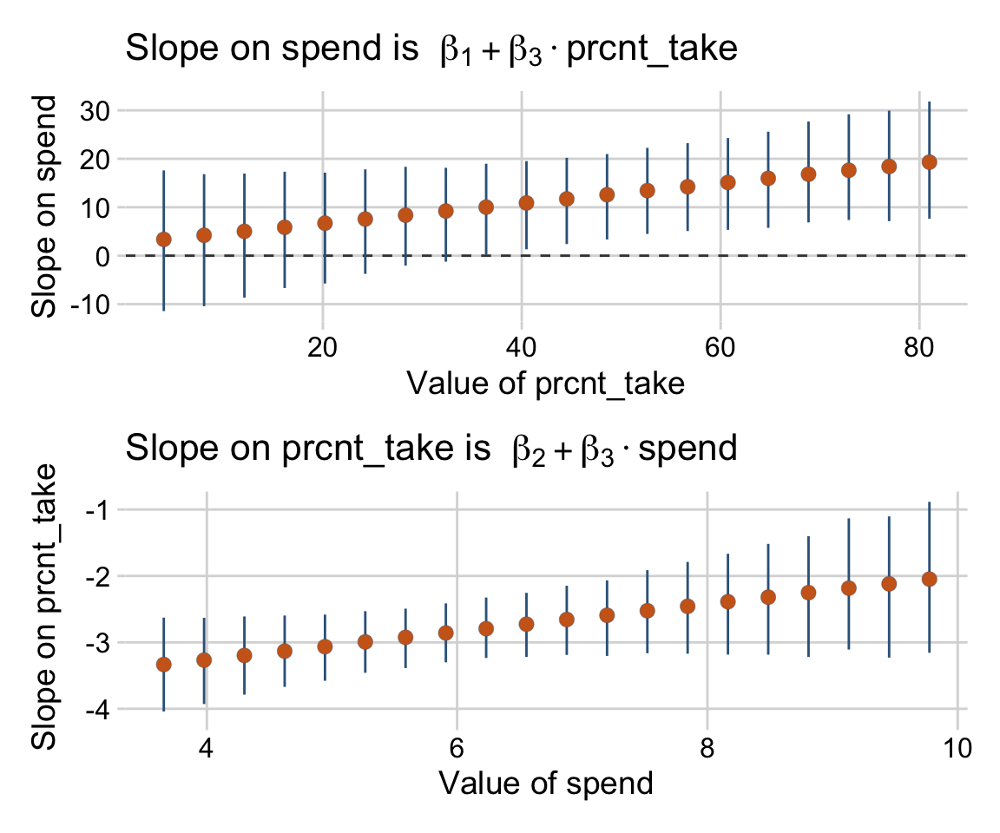
Kruschke outlined all this in the opening paragraphs of page 530. His parting words of this subsection warrant repeating: “if you include an interaction term, you cannot ignore it even if its marginal posterior distribution includes zero” (p. 530).
18.3 Shrinkage of regression coefficients
In some research, there are many candidate predictors which we suspect could possibly be informative about the predicted variable. For example, when predicting college GPA, we might include high-school GPA, high-school SAT score, income of student, income of parents, years of education of the parents, spending per pupil at the student’s high school, student IQ, student height, weight, shoe size, hours of sleep per night, distance from home to school, amount of caffeine consumed, hours spent studying, hours spent earning a wage, blood pressure, etc. We can include all the candidate predictors in the model, with a regression coefficient for every predictor. And this is not even considering interactions, which we will ignore for now.
With so many candidate predictors of noisy data, there may be some regression coefficients that are spuriously estimated to be non-zero. We would like some protection against accidentally nonzero regression coefficients. (p. 530)
That’s what this section is all about. Figure 18.10 will give us a sense of what a model like this might look like.
# Brackets
p1 <- tibble(x = 0.5,
y = 0.5,
label = "{_} {_}") |>
ggplot(aes(x = x, y = y, label = label)) +
geom_text(family = "Times", size = 10) +
scale_x_continuous(expand = c(0, 0), limits = c(0, 1)) +
ylim(0, 1) +
theme_void()
# Two annotated arrows
p2 <- tibble(x = c(0.15, 0.85),
y = 1,
xend = c(0.25, 0.75),
yend = 0.2) |>
ggplot(aes(x = x, xend = xend,
y = y, yend = yend)) +
geom_segment(arrow = my_arrow) +
xlim(0, 1) +
theme_void()
# Normal density
p3 <- tibble(x = seq(from = -3, to = 3, by = 0.1)) |>
ggplot(aes(x = x, y = (dnorm(x)) / max(dnorm(x)))) +
geom_area(alpha = 0.6, color = "steelblue4", fill = "steelblue4") +
annotate(geom = "text",
x = 0, y = 0.2,
label = "normal",
size = 7) +
annotate(geom = "text",
x = c(0, 1.5), y = 0.6,
label = c("italic(M)[0]", "italic(S)[0]"),
family = "Times", parse = TRUE, size = 7) +
scale_x_continuous(expand = c(0, 0)) +
theme_void() +
theme(axis.line.x = element_line(linewidth = 0.5))
# A student-t density
p4 <- tibble(x = seq(from = -3, to = 3, by = 0.1)) |>
ggplot(aes(x = x, y = (dt(x, 3) / max(dt(x, 3))))) +
geom_area(alpha = 0.6, color = "steelblue4", fill = "steelblue4") +
annotate(geom = "text",
x = 0, y = 0.2,
label = "student t",
size = 7) +
annotate(geom = "text",
x = 0, y = 0.6,
label = "nu[beta]~~~0~~~sigma[beta]",
family = "Times", parse = TRUE, size = 7) +
scale_x_continuous(expand = c(0, 0)) +
theme_void() +
theme(axis.line.x = element_line(linewidth = 0.5))
# Two more annotated arrows
p5 <- tibble(x = c(0.33, 1.67),
y = 1,
xend = c(0.63, 1.2),
yend = 0) |>
ggplot(aes(x = x, xend = xend,
y = y, yend = yend)) +
geom_segment(arrow = my_arrow) +
annotate(geom = "text",
x = c(0.35, 1.35, 1.54), y = 0.5,
label = c("'~'", "'~'", "italic(j)"),
family = "Times", parse = TRUE, size = c(10, 10, 7)) +
xlim(0, 2) +
theme_void()
# Exponential density
p6 <- tibble(x = seq(from = 0, to = 1, by = 0.01)) |>
ggplot(aes(x = x, y = (dexp(x, 2) / max(dexp(x, 2))))) +
geom_area(alpha = 0.6, color = "steelblue4", fill = "steelblue4") +
annotate(geom = "text",
x = 0.5, y = 0.2,
label = "exp",
size = 7) +
annotate(geom = "text",
x = 0.5, y = 0.6,
label = "italic(K)",
family = "Times", parse = TRUE, size = 7) +
scale_x_continuous(expand = c(0, 0)) +
theme_void() +
theme(axis.line.x = element_line(linewidth = 0.5))
# Likelihood formula
p7 <- tibble(x = 0.5,
y = 0.25,
label = "beta[0]+sum()[italic(j)]*beta[italic(j)]*italic(x)[italic(ji)]") |>
ggplot(aes(x = x, y = y, label = label)) +
geom_text(family = "Times", parse = TRUE, size = 7) +
scale_x_continuous(expand = c(0, 0), limits = c(0, 1)) +
ylim(0, 1) +
theme_void()
# Half-normal density
p8 <-tibble(x = seq(from = 0, to = 3, by = 0.01)) |>
ggplot(aes(x = x, y = (dnorm(x)) / max(dnorm(x)))) +
geom_area(alpha = 0.6, color = "steelblue4", fill = "steelblue4") +
annotate(geom = "text",
x = 1.5, y = 0.2,
label = "half-normal",
size = 7) +
annotate(geom = "text",
x = 1.5, y = 0.6,
label = "0*','*~italic(S)[sigma]",
family = "Times", parse = TRUE, size = 7) +
scale_x_continuous(expand = c(0, 0)) +
theme_void() +
theme(axis.line.x = element_line(linewidth = 0.5))
# Four annotated arrows
p9 <- tibble(x = c(0.43, 0.43, 1.5, 2.5),
y = c(1, 0.55, 1, 1),
xend = c(0.43, 1.225, 1.5, 1.75),
yend = c(0.8, 0.15, 0.2, 0.2)) |>
ggplot(aes(x = x, xend = xend,
y = y, yend = yend)) +
geom_segment(arrow = my_arrow) +
annotate(geom = "text",
x = c(0.3, 0.7, 1.38, 2), y = c(0.92, 0.22, 0.65, 0.6),
label = c("'~'", "'='", "'='", "'~'"),
family = "Times", parse = TRUE, size = 10) +
annotate(geom = "text",
x = 0.43, y = 0.7,
label = "nu*minute+1",
family = "Times", parse = TRUE, size = 7) +
xlim(0, 3) +
theme_void()
# A second student-t density
p10 <- tibble(x = seq(from = -3, to = 3, by = 0.1)) |>
ggplot(aes(x = x, y = (dt(x, 3) / max(dt(x, 3))))) +
geom_area(alpha = 0.6, color = "steelblue4", fill = "steelblue4") +
annotate(geom = "text",
x = 0, y = 0.2,
label = "student t",
size = 7) +
annotate(geom = "text",
x = 0, y = 0.6,
label = "nu~~~mu[italic(i)]~~~sigma",
family = "Times", parse = TRUE, size = 7) +
scale_x_continuous(expand = c(0, 0)) +
theme_void() +
theme(axis.line.x = element_line(linewidth = 0.5))
# The final annotated arrow
p11 <- tibble(x = c(0.375, 0.625),
y = c(1/3, 1/3),
label = c("'~'", "italic(i)")) |>
ggplot(aes(x = x, y = y, label = label)) +
geom_text(family = "Times", parse = TRUE, size = c(10, 7)) +
geom_segment(x = 0.5, xend = 0.5,
y = 1, yend = 0,
arrow = my_arrow) +
xlim(0, 1) +
theme_void()
# Some text
p12 <- tibble(x = 0.5,
y = 0.5,
label = "italic(y[i])") |>
ggplot(aes(x = x, y = y, label = label)) +
geom_text(family = "Times", parse = TRUE, size = 7) +
xlim(0, 1) +
theme_void()
# Define the layout
layout <- c(
area(t = 1, b = 1, l = 7, r = 9),
area(t = 3, b = 4, l = 3, r = 5),
area(t = 3, b = 4, l = 7, r = 9),
area(t = 2, b = 3, l = 7, r = 9),
area(t = 6, b = 7, l = 1, r = 3),
area(t = 6, b = 7, l = 5, r = 7),
area(t = 6, b = 7, l = 9, r = 11),
area(t = 5, b = 6, l = 3, r = 9),
area(t = 9, b = 10, l = 5, r = 7),
area(t = 8, b = 9, l = 1, r = 11),
area(t = 11, b = 11, l = 5, r = 7),
area(t = 12, b = 12, l = 5, r = 7))
# Combine, adjust, and display
(p1 + p3 + p4 + p2 + p6 + p7 + p8 + p5 + p10 + p9 + p11 + p12) +
plot_layout(design = layout) &
ylim(0, 1) &
theme(plot.margin = margin(0, 5.5, 0, 5.5))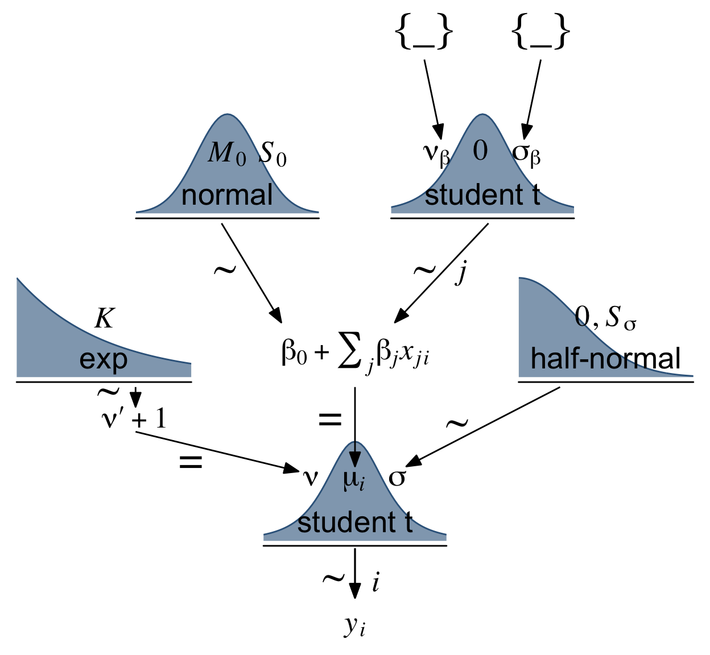
Make our random noise predictors with rnorm().
set.seed(18)
my_data <- my_data |>
mutate(x_rand_1 = rnorm(n = n(), mean = 0, sd = 1),
x_rand_2 = rnorm(n = n(), mean = 0, sd = 1),
x_rand_3 = rnorm(n = n(), mean = 0, sd = 1),
x_rand_4 = rnorm(n = n(), mean = 0, sd = 1),
x_rand_5 = rnorm(n = n(), mean = 0, sd = 1),
x_rand_6 = rnorm(n = n(), mean = 0, sd = 1),
x_rand_7 = rnorm(n = n(), mean = 0, sd = 1),
x_rand_8 = rnorm(n = n(), mean = 0, sd = 1),
x_rand_9 = rnorm(n = n(), mean = 0, sd = 1),
x_rand_10 = rnorm(n = n(), mean = 0, sd = 1),
x_rand_11 = rnorm(n = n(), mean = 0, sd = 1),
x_rand_12 = rnorm(n = n(), mean = 0, sd = 1))
glimpse(my_data)Rows: 50
Columns: 27
$ State <chr> "Alabama", "Alaska", "Arizona", "Arkansas", "California", "Colorado", "Connecticut", "Delaware", "Florid…
$ Spend <dbl> 4.405, 8.963, 4.778, 4.459, 4.992, 5.443, 8.817, 7.030, 5.718, 5.193, 6.078, 4.210, 6.136, 5.826, 5.483,…
$ StuTeaRat <dbl> 17.2, 17.6, 19.3, 17.1, 24.0, 18.4, 14.4, 16.6, 19.1, 16.3, 17.9, 19.1, 17.3, 17.5, 15.8, 15.1, 17.0, 16…
$ Salary <dbl> 31.144, 47.951, 32.175, 28.934, 41.078, 34.571, 50.045, 39.076, 32.588, 32.291, 38.518, 29.783, 39.431, …
$ PrcntTake <dbl> 8, 47, 27, 6, 45, 29, 81, 68, 48, 65, 57, 15, 13, 58, 5, 9, 11, 9, 68, 64, 80, 11, 9, 4, 9, 21, 9, 30, 7…
$ SATV <dbl> 491, 445, 448, 482, 417, 462, 431, 429, 420, 406, 407, 468, 488, 415, 516, 503, 477, 486, 427, 430, 430,…
$ SATM <dbl> 538, 489, 496, 523, 485, 518, 477, 468, 469, 448, 482, 511, 560, 467, 583, 557, 522, 535, 469, 479, 477,…
$ SATT <dbl> 1029, 934, 944, 1005, 902, 980, 908, 897, 889, 854, 889, 979, 1048, 882, 1099, 1060, 999, 1021, 896, 909…
$ prcnt_take_z <dbl> -1.0178453, 0.4394222, -0.3078945, -1.0925770, 0.3646905, -0.2331628, 1.7098605, 1.2241047, 0.4767880, 1…
$ spend_z <dbl> -1.10086058, 2.24370805, -0.82716069, -1.06123647, -0.67013180, -0.33919708, 2.13657619, 0.82531157, -0.…
$ satt_z <dbl> 0.8430838, -0.4266207, -0.2929676, 0.5223163, -0.8543107, 0.1881836, -0.7741188, -0.9211372, -1.0280597,…
$ prop_not_take <dbl> 0.92, 0.53, 0.73, 0.94, 0.55, 0.71, 0.19, 0.32, 0.52, 0.35, 0.43, 0.85, 0.87, 0.42, 0.95, 0.91, 0.89, 0.…
$ prop_not_take_z <dbl> 1.0178453, -0.4394222, 0.3078945, 1.0925770, -0.3646905, 0.2331628, -1.7098605, -1.2241047, -0.4767880, …
$ interaction <dbl> 35.240, 421.261, 129.006, 26.754, 224.640, 157.847, 714.177, 478.040, 274.464, 337.545, 346.446, 63.150,…
$ interaction_z <dbl> -0.94113720, 0.93111798, -0.48635915, -0.98229547, -0.02252103, -0.34647631, 2.35180104, 1.20650397, 0.2…
$ x_rand_1 <dbl> 0.92645924, 1.82282117, -1.61056690, -0.28510975, -0.34207303, 0.36617615, -1.32704085, 2.41259221, 0.06…
$ x_rand_2 <dbl> -0.90258025, -1.13163679, 0.49708131, -0.54771876, -0.08940139, -2.13096317, -0.90071516, 1.23013961, 0.…
$ x_rand_3 <dbl> 0.51576102, 0.30710965, 0.66199996, 2.21990655, -2.04146130, 1.31792828, -0.22777562, 0.72589145, 0.0907…
$ x_rand_4 <dbl> 1.08730491, -1.23909473, 0.43161390, 1.06733141, -0.78968121, -1.35970806, 0.58849684, -0.43391821, 1.50…
$ x_rand_5 <dbl> -0.23846777, 0.15702031, -1.02132795, 0.75395217, -2.37211428, 0.37154710, 0.50858727, -0.58181826, -0.8…
$ x_rand_6 <dbl> 0.06014956, 1.00555800, 1.47981871, -0.82827890, -0.58094789, 0.01476206, -2.24947165, -0.62490210, 1.47…
$ x_rand_7 <dbl> 1.469617085, 0.517903197, -2.331103532, 0.113399955, 1.726877229, 0.465973315, -0.846207284, 1.120643983…
$ x_rand_8 <dbl> 0.03463437, -1.48737599, -0.01528284, 0.48480309, 0.20053831, 1.50898924, -0.55024175, -0.83270307, -0.0…
$ x_rand_9 <dbl> -0.4556078, -0.7035475, -0.5001913, -0.6526022, 0.7742424, -0.9265176, 0.7979464, -1.1976835, -1.5916203…
$ x_rand_10 <dbl> 1.28585856, -0.74746404, -0.31072546, -1.10374681, 0.33135999, -1.18859149, 2.03092349, 2.79956028, -0.8…
$ x_rand_11 <dbl> 0.17236599, -0.37956084, 0.31982301, 0.29678108, 1.22000140, 0.91645870, -0.85361980, 1.02421627, -0.713…
$ x_rand_12 <dbl> -0.53048519, 0.92465424, 0.66876661, 0.30935146, 1.47440632, -0.10267091, -1.00708877, -0.20551122, -0.2…Here’s how to fit the naïve model, which does not impose shrinkage on the coefficients.
fit18.4 <- update(
fit18.1,
newdata = my_data,
formula = satt_z ~ 1 + prcnt_take_z + spend_z + x_rand_1 + x_rand_2 + x_rand_3 + x_rand_4 + x_rand_5 + x_rand_6 + x_rand_7 + x_rand_8 + x_rand_9 + x_rand_10 + x_rand_11 + x_rand_12,
seed = 18,
file = "fits/fit18.04")The desired updates require recompiling the modelExamine the posterior with posterior_summary().
posterior_summary(fit18.4)[1:17, ] |>
round(digits = 2) Estimate Est.Error Q2.5 Q97.5
b_Intercept -0.02 0.07 -0.15 0.11
b_prcnt_take_z -1.12 0.09 -1.29 -0.93
b_spend_z 0.32 0.09 0.15 0.50
b_x_rand_1 0.03 0.06 -0.09 0.15
b_x_rand_2 0.02 0.09 -0.16 0.20
b_x_rand_3 0.09 0.07 -0.05 0.23
b_x_rand_4 -0.09 0.07 -0.23 0.05
b_x_rand_5 0.01 0.06 -0.11 0.12
b_x_rand_6 -0.02 0.08 -0.17 0.13
b_x_rand_7 -0.03 0.07 -0.17 0.11
b_x_rand_8 -0.18 0.07 -0.32 -0.04
b_x_rand_9 0.13 0.06 0.02 0.26
b_x_rand_10 0.00 0.05 -0.10 0.11
b_x_rand_11 0.05 0.09 -0.13 0.22
b_x_rand_12 -0.08 0.06 -0.20 0.04
sigma 0.38 0.07 0.23 0.53
nu 25.11 27.24 2.01 102.93Before we can make Figure 18.11, we’ll need to update our make_beta_0() function to accommodate this model.
make_beta_0 <- function(
zeta_0, zeta_1, zeta_2, zeta_3, zeta_4, zeta_5, zeta_6, zeta_7, zeta_8, zeta_9, zeta_10, zeta_11, zeta_12, zeta_13, zeta_14,
sd_x_1, sd_x_2, sd_x_3, sd_x_4, sd_x_5, sd_x_6, sd_x_7, sd_x_8, sd_x_9, sd_x_10, sd_x_11, sd_x_12, sd_x_13, sd_x_14, sd_y,
m_x_1, m_x_2, m_x_3, m_x_4, m_x_5, m_x_6, m_x_7, m_x_8, m_x_9, m_x_10, m_x_11, m_x_12, m_x_13, m_x_14, m_y) {
# Begin algebra
sd_y * zeta_0 + m_y - sd_y * ((zeta_1 * m_x_1 / sd_x_1) +
(zeta_2 * m_x_2 / sd_x_2) +
(zeta_3 * m_x_3 / sd_x_3) +
(zeta_4 * m_x_4 / sd_x_4) +
(zeta_5 * m_x_5 / sd_x_5) +
(zeta_6 * m_x_6 / sd_x_6) +
(zeta_7 * m_x_7 / sd_x_7) +
(zeta_8 * m_x_8 / sd_x_8) +
(zeta_9 * m_x_9 / sd_x_9) +
(zeta_10 * m_x_10 / sd_x_10) +
(zeta_11 * m_x_11 / sd_x_11) +
(zeta_12 * m_x_12 / sd_x_12) +
(zeta_13 * m_x_13 / sd_x_13) +
(zeta_14 * m_x_14 / sd_x_14))
}Sigh, our poor make_beta_0() and make_beta_1() code is getting obscene. I don’t have the energy to think of how to wrap this into a simpler function. Someone probably should. If that ends up as you, do share your code.
sd_x_1 <- sd(my_data$Spend)
sd_x_2 <- sd(my_data$PrcntTake)
sd_x_3 <- sd(my_data$x_rand_1)
sd_x_4 <- sd(my_data$x_rand_2)
sd_x_5 <- sd(my_data$x_rand_3)
sd_x_6 <- sd(my_data$x_rand_4)
sd_x_7 <- sd(my_data$x_rand_5)
sd_x_8 <- sd(my_data$x_rand_6)
sd_x_9 <- sd(my_data$x_rand_7)
sd_x_10 <- sd(my_data$x_rand_8)
sd_x_11 <- sd(my_data$x_rand_9)
sd_x_12 <- sd(my_data$x_rand_10)
sd_x_13 <- sd(my_data$x_rand_11)
sd_x_14 <- sd(my_data$x_rand_12)
sd_y <- sd(my_data$SATT)
m_x_1 <- mean(my_data$Spend)
m_x_2 <- mean(my_data$PrcntTake)
m_x_3 <- mean(my_data$x_rand_1)
m_x_4 <- mean(my_data$x_rand_2)
m_x_5 <- mean(my_data$x_rand_3)
m_x_6 <- mean(my_data$x_rand_4)
m_x_7 <- mean(my_data$x_rand_5)
m_x_8 <- mean(my_data$x_rand_6)
m_x_9 <- mean(my_data$x_rand_7)
m_x_10 <- mean(my_data$x_rand_8)
m_x_11 <- mean(my_data$x_rand_9)
m_x_12 <- mean(my_data$x_rand_10)
m_x_13 <- mean(my_data$x_rand_11)
m_x_14 <- mean(my_data$x_rand_12)
m_y <- mean(my_data$SATT)
draws <- as_draws_df(fit18.4) |>
transmute(Intercept = make_beta_0(zeta_0 = b_Intercept,
zeta_1 = b_spend_z,
zeta_2 = b_prcnt_take_z,
zeta_3 = b_x_rand_1,
zeta_4 = b_x_rand_2,
zeta_5 = b_x_rand_3,
zeta_6 = b_x_rand_4,
zeta_7 = b_x_rand_5,
zeta_8 = b_x_rand_6,
zeta_9 = b_x_rand_7,
zeta_10 = b_x_rand_8,
zeta_11 = b_x_rand_9,
zeta_12 = b_x_rand_10,
zeta_13 = b_x_rand_11,
zeta_14 = b_x_rand_12,
sd_x_1 = sd_x_1,
sd_x_2 = sd_x_2,
sd_x_3 = sd_x_3,
sd_x_4 = sd_x_4,
sd_x_5 = sd_x_5,
sd_x_6 = sd_x_6,
sd_x_7 = sd_x_7,
sd_x_8 = sd_x_8,
sd_x_9 = sd_x_9,
sd_x_10 = sd_x_10,
sd_x_11 = sd_x_11,
sd_x_12 = sd_x_12,
sd_x_13 = sd_x_13,
sd_x_14 = sd_x_14,
sd_y = sd_y,
m_x_1 = m_x_1,
m_x_2 = m_x_2,
m_x_3 = m_x_3,
m_x_4 = m_x_4,
m_x_5 = m_x_5,
m_x_6 = m_x_6,
m_x_7 = m_x_7,
m_x_8 = m_x_8,
m_x_9 = m_x_9,
m_x_10 = m_x_10,
m_x_11 = m_x_11,
m_x_12 = m_x_12,
m_x_13 = m_x_13,
m_x_14 = m_x_14,
m_y = m_y),
Spend = make_beta_j(zeta_j = b_spend_z,
sd_j = sd_x_1,
sd_y = sd_y),
`Percent Take` = make_beta_j(zeta_j = b_prcnt_take_z,
sd_j = sd_x_2,
sd_y = sd_y),
x_rand_1 = make_beta_j(zeta_j = b_x_rand_1,
sd_j = sd_x_3,
sd_y = sd_y),
x_rand_2 = make_beta_j(zeta_j = b_x_rand_2,
sd_j = sd_x_4,
sd_y = sd_y),
x_rand_3 = make_beta_j(zeta_j = b_x_rand_3,
sd_j = sd_x_5,
sd_y = sd_y),
x_rand_4 = make_beta_j(zeta_j = b_x_rand_4,
sd_j = sd_x_6,
sd_y = sd_y),
x_rand_5 = make_beta_j(zeta_j = b_x_rand_5,
sd_j = sd_x_7,
sd_y = sd_y),
x_rand_6 = make_beta_j(zeta_j = b_x_rand_6,
sd_j = sd_x_8,
sd_y = sd_y),
x_rand_7 = make_beta_j(zeta_j = b_x_rand_7,
sd_j = sd_x_9,
sd_y = sd_y),
x_rand_8 = make_beta_j(zeta_j = b_x_rand_8,
sd_j = sd_x_10,
sd_y = sd_y),
x_rand_9 = make_beta_j(zeta_j = b_x_rand_9,
sd_j = sd_x_11,
sd_y = sd_y),
x_rand_10 = make_beta_j(zeta_j = b_x_rand_10,
sd_j = sd_x_12,
sd_y = sd_y),
x_rand_11 = make_beta_j(zeta_j = b_x_rand_11,
sd_j = sd_x_13,
sd_y = sd_y),
x_rand_12 = make_beta_j(zeta_j = b_x_rand_12,
sd_j = sd_x_14,
sd_y = sd_y),
Scale = sigma * sd_y,
Normality = nu |> log10())
glimpse(draws)Rows: 4,000
Columns: 17
$ Intercept <dbl> 968.0073, 997.4613, 975.6075, 988.4282, 951.4445, 963.9197, 956.8848, 973.3258, 974.7847, 999.9799, 1000.…
$ Spend <dbl> 17.312033, 11.640625, 17.566078, 16.003418, 18.190610, 18.647761, 20.252584, 15.793636, 18.008487, 12.563…
$ `Percent Take` <dbl> -3.291999, -2.783794, -3.266824, -3.371252, -2.859344, -3.218451, -3.431305, -3.070532, -3.121426, -3.120…
$ x_rand_1 <dbl> 1.28922669, 4.74004730, 1.42365767, 1.91620762, 5.00370237, -5.09028391, -1.38536792, 0.19955761, -1.7462…
$ x_rand_2 <dbl> 0.9581216, 15.4504781, -0.1099237, 1.8676663, 7.7126193, 19.2473338, -1.3355082, 0.2689558, 16.6167401, -…
$ x_rand_3 <dbl> 12.7590522, 7.8805653, 7.1138975, 5.6046693, 2.1842011, 10.5740967, 14.1714832, 10.9754956, 8.4052757, 0.…
$ x_rand_4 <dbl> -11.2191701, 2.1733429, -5.0591707, -5.4482394, -2.2422893, -7.9832125, -1.6651310, -1.1580572, -11.98100…
$ x_rand_5 <dbl> 4.14145402, -1.38055773, 5.16868214, 6.67356150, -6.58826741, -0.88813257, 4.39709460, -0.35021708, -1.55…
$ x_rand_6 <dbl> -6.637297534, -2.906850800, -10.887609203, -8.341977244, -3.356791642, -16.968478230, -8.265830364, -10.1…
$ x_rand_7 <dbl> -5.14874441, 4.62787952, -8.76766801, -9.38960732, 4.77391523, 1.41961052, 5.42735621, 2.14258038, -5.483…
$ x_rand_8 <dbl> -18.743038, -9.925525, -9.731561, -9.672364, -17.661587, -16.590223, -13.174543, -12.132709, -16.198453, …
$ x_rand_9 <dbl> 6.5031877, 5.8673085, 6.0473952, 3.8257170, 7.7564174, 8.8421037, 8.7393224, 5.8072353, 5.5899204, 10.174…
$ x_rand_10 <dbl> 0.25519722, -4.61681338, 0.48326059, 0.51416889, 0.42512120, -3.89841913, -3.38189211, -5.96858737, 2.315…
$ x_rand_11 <dbl> 5.30479079, 4.09876037, -1.62467494, -0.02222584, -6.56338100, 3.13689095, 2.23921997, -4.84102147, -2.52…
$ x_rand_12 <dbl> -1.1525571, -13.0672740, 0.3295865, -2.3552730, -3.2359006, -2.5907384, -3.7176102, -8.5188949, -1.507879…
$ Scale <dbl> 29.95506, 22.53284, 29.89520, 28.24492, 27.27578, 24.14370, 25.95631, 24.38429, 35.15424, 25.02883, 27.17…
$ Normality <dbl> 1.9800636, 0.4553806, 1.2441596, 1.3976956, 0.8333095, 0.5924393, 0.7810842, 0.5914519, 1.8747696, 0.8537…Okay, here are our versions of the histograms of Figure 18.11.
draws |>
pivot_longer(cols = c(Intercept:x_rand_3, x_rand_10:Normality)) |>
mutate(name = factor(name,
levels = c("Intercept", "Spend", "Percent Take",
"x_rand_1", "x_rand_2", "x_rand_3",
"x_rand_10", "x_rand_11", "x_rand_12",
"Scale", "Normality"))) |>
ggplot(aes(x = value)) +
stat_wilke(normalize = "panels") +
scale_y_continuous(NULL, breaks = NULL) +
xlab(NULL) +
coord_cartesian(ylim = c(-0.01, NA)) +
panel_border() +
theme(axis.text.x = element_text(size = 9),
legend.position = c(0.74, 0.09)) +
facet_wrap(~ name, ncol = 3, scales = "free")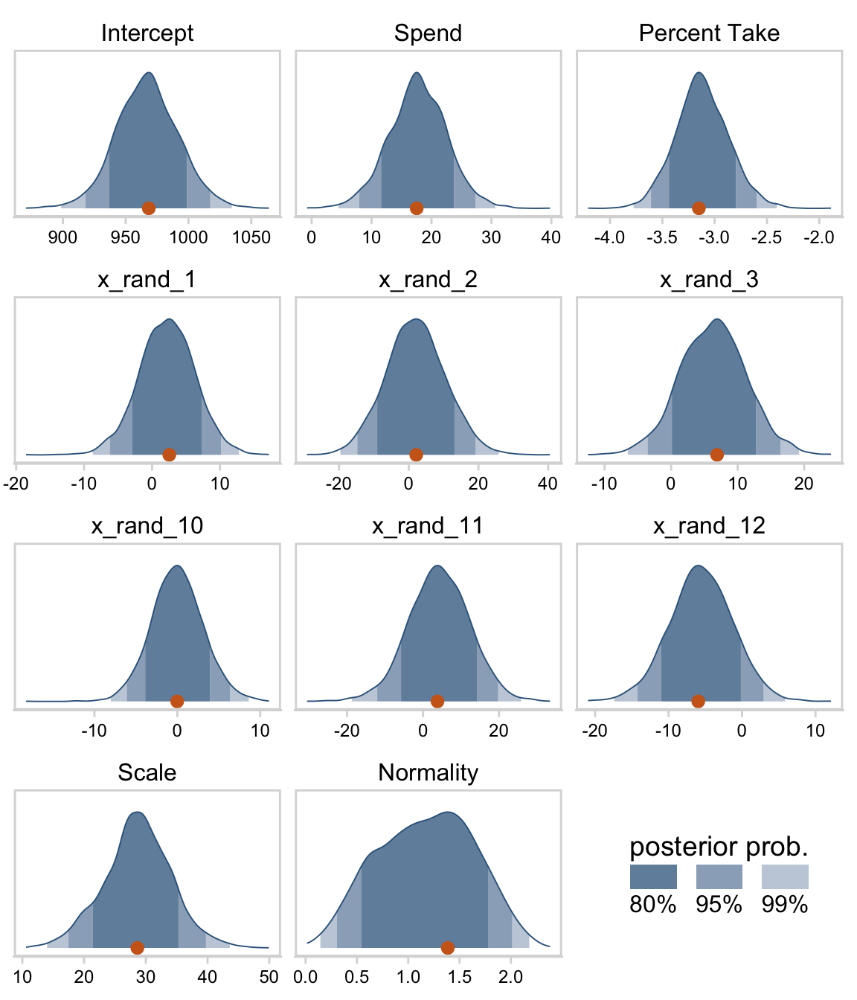
And here’s the final density plot depicting the Bayesian \(R^2\).
bayes_R2(fit18.4, summary = FALSE) |>
as_tibble() |>
ggplot(aes(x = R2)) +
stat_wilke() +
scale_y_continuous(NULL, breaks = NULL) +
labs(x = NULL,
subtitle = expression(Bayesian~italic(R)^2)) +
coord_cartesian(xlim = c(0, 1),
ylim = c(-0.01, NA)) +
theme(legend.position = c(0.01, 0.8))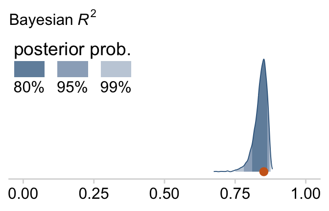
Note that unlike the one Kruschke displayed in the text, our brms::bayes_R2()-based \(R^2\) distribution did not exceed the logical right bound of 1.
Sometimes when you have this many parameters you’d like to compare, it’s better to display their summaries with an ordered coefficient plot.
draws |>
pivot_longer(cols = Spend:x_rand_12) |>
mutate(name = fct_reorder(name, value)) |>
ggplot(aes(x = value, y = name)) +
geom_vline(xintercept = 0, color = "grey25", linetype = 2) +
stat_pointinterval(point_interval = mode_hdi, .width = 0.95,
color = "steelblue4", point_color = "chocolate3", point_size = 4) +
labs(x = NULL,
y = NULL) +
theme(axis.text.y = element_text(hjust = 0))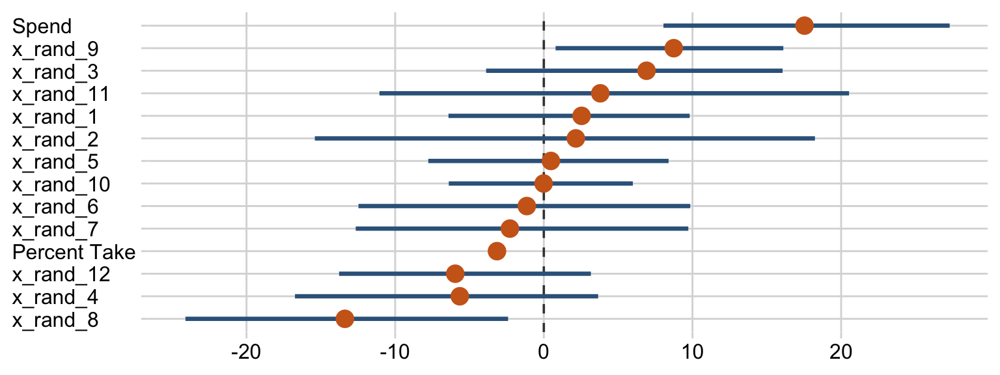
Now we can see that by chance alone, the coefficients for x_rand_8 and x_rand_9 are clearly distinct from zero. Our stat_wilke() function can be informative, too.
draws |>
pivot_longer(cols = Spend:x_rand_12) |>
ggplot(aes(x = value, y = reorder(name, value), group = reorder(name, value))) +
geom_vline(xintercept = 0, color = "grey25", linetype = 2) +
stat_wilke(height = 10, point_size = 3) +
labs(x = NULL,
y = NULL) +
coord_cartesian(ylim = c(1.25, 14.5)) +
theme(axis.text.y = element_text(hjust = 0),
legend.position = c(0.785, 0.13)) 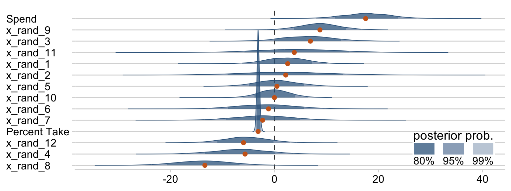
With brms, we can fit something like the model Kruschke displayed in Figure 18.12 with the horseshoe() prior. From the horseshoe section of the brms reference manual:
The horseshoe prior is a special shrinkage prior initially proposed by (Carvalho et al., 2009). It is symmetric around zero with fat tails and an infinitely large spike at zero. This makes it ideal for sparse models that have many regression coefficients, although only a minority of them is non-zero. The horseshoe prior can be applied on all population-level effects at once (excluding the intercept) by using
set_prior("horseshoe(1)"). The1implies that the student-t prior of the local shrinkage parameters has 1 degrees of freedom (Bürkner, 2022a, p. 105)
Based on the quote, here’s how to fit our horseshoe-prior model with brm().
fit18.5 <- update(
fit18.4,
newdata = my_data,
formula = satt_z ~ 1 + prcnt_take_z + spend_z + x_rand_1 + x_rand_2 + x_rand_3 + x_rand_4 + x_rand_5 + x_rand_6 + x_rand_7 + x_rand_8 + x_rand_9 + x_rand_10 + x_rand_11 + x_rand_12,
prior = c(prior(normal(0, 2), class = Intercept),
prior(horseshoe(1), class = b),
prior(normal(0, 1), class = sigma),
prior(exponential(one_over_twentynine), class = nu)),
seed = 18,
control = list(adapt_delta = 0.9),
file = "fits/fit18.05")The desired updates require recompiling the modelCheck the parameter summary.
posterior_summary(fit18.5)[1:17, ] |>
round(digits = 2) Estimate Est.Error Q2.5 Q97.5
b_Intercept -0.02 0.06 -0.14 0.11
b_prcnt_take_z -1.02 0.10 -1.20 -0.83
b_spend_z 0.20 0.10 0.00 0.39
b_x_rand_1 0.01 0.04 -0.05 0.10
b_x_rand_2 0.01 0.04 -0.09 0.12
b_x_rand_3 0.02 0.04 -0.05 0.12
b_x_rand_4 -0.03 0.05 -0.14 0.04
b_x_rand_5 0.00 0.03 -0.07 0.08
b_x_rand_6 -0.02 0.04 -0.13 0.05
b_x_rand_7 -0.01 0.04 -0.10 0.07
b_x_rand_8 -0.09 0.07 -0.24 0.01
b_x_rand_9 0.05 0.05 -0.02 0.17
b_x_rand_10 0.00 0.03 -0.06 0.07
b_x_rand_11 0.01 0.04 -0.08 0.12
b_x_rand_12 -0.02 0.04 -0.11 0.04
sigma 0.40 0.06 0.27 0.52
nu 30.68 28.56 2.99 110.80Our make_beta_0() and make_beta_1() code remains obscene.
draws <- as_draws_df(fit18.5) |>
transmute(Intercept = make_beta_0(zeta_0 = b_Intercept,
zeta_1 = b_spend_z,
zeta_2 = b_prcnt_take_z,
zeta_3 = b_x_rand_1,
zeta_4 = b_x_rand_2,
zeta_5 = b_x_rand_3,
zeta_6 = b_x_rand_4,
zeta_7 = b_x_rand_5,
zeta_8 = b_x_rand_6,
zeta_9 = b_x_rand_7,
zeta_10 = b_x_rand_8,
zeta_11 = b_x_rand_9,
zeta_12 = b_x_rand_10,
zeta_13 = b_x_rand_11,
zeta_14 = b_x_rand_12,
sd_x_1 = sd_x_1,
sd_x_2 = sd_x_2,
sd_x_3 = sd_x_3,
sd_x_4 = sd_x_4,
sd_x_5 = sd_x_5,
sd_x_6 = sd_x_6,
sd_x_7 = sd_x_7,
sd_x_8 = sd_x_8,
sd_x_9 = sd_x_9,
sd_x_10 = sd_x_10,
sd_x_11 = sd_x_11,
sd_x_12 = sd_x_12,
sd_x_13 = sd_x_13,
sd_x_14 = sd_x_14,
sd_y = sd_y,
m_x_1 = m_x_1,
m_x_2 = m_x_2,
m_x_3 = m_x_3,
m_x_4 = m_x_4,
m_x_5 = m_x_5,
m_x_6 = m_x_6,
m_x_7 = m_x_7,
m_x_8 = m_x_8,
m_x_9 = m_x_9,
m_x_10 = m_x_10,
m_x_11 = m_x_11,
m_x_12 = m_x_12,
m_x_13 = m_x_13,
m_x_14 = m_x_14,
m_y = m_y),
Spend = make_beta_j(zeta_j = b_spend_z,
sd_j = sd_x_1,
sd_y = sd_y),
`Percent Take` = make_beta_j(zeta_j = b_prcnt_take_z,
sd_j = sd_x_2,
sd_y = sd_y),
x_rand_1 = make_beta_j(zeta_j = b_x_rand_1,
sd_j = sd_x_3,
sd_y = sd_y),
x_rand_2 = make_beta_j(zeta_j = b_x_rand_2,
sd_j = sd_x_4,
sd_y = sd_y),
x_rand_3 = make_beta_j(zeta_j = b_x_rand_3,
sd_j = sd_x_5,
sd_y = sd_y),
x_rand_4 = make_beta_j(zeta_j = b_x_rand_4,
sd_j = sd_x_6,
sd_y = sd_y),
x_rand_5 = make_beta_j(zeta_j = b_x_rand_5,
sd_j = sd_x_7,
sd_y = sd_y),
x_rand_6 = make_beta_j(zeta_j = b_x_rand_6,
sd_j = sd_x_8,
sd_y = sd_y),
x_rand_7 = make_beta_j(zeta_j = b_x_rand_7,
sd_j = sd_x_9,
sd_y = sd_y),
x_rand_8 = make_beta_j(zeta_j = b_x_rand_8,
sd_j = sd_x_10,
sd_y = sd_y),
x_rand_9 = make_beta_j(zeta_j = b_x_rand_9,
sd_j = sd_x_11,
sd_y = sd_y),
x_rand_10 = make_beta_j(zeta_j = b_x_rand_10,
sd_j = sd_x_12,
sd_y = sd_y),
x_rand_11 = make_beta_j(zeta_j = b_x_rand_11,
sd_j = sd_x_13,
sd_y = sd_y),
x_rand_12 = make_beta_j(zeta_j = b_x_rand_12,
sd_j = sd_x_14,
sd_y = sd_y),
Scale = sigma * sd_y,
Normality = nu |> log10())
glimpse(draws)Rows: 4,000
Columns: 17
$ Intercept <dbl> 987.4106, 987.5948, 993.1136, 964.0033, 974.9709, 989.8606, 1023.3592, 984.2697, 972.8914, 966.8684, 1005…
$ Spend <dbl> 14.26274676, 12.10249630, 12.39016915, 18.33295979, 16.52987721, 12.35382042, 8.99478047, 12.44150102, 17…
$ `Percent Take` <dbl> -3.145320, -2.845946, -2.992909, -3.210691, -3.271425, -2.672208, -3.053646, -2.794664, -3.186106, -3.208…
$ x_rand_1 <dbl> 0.06113360, -3.14699629, -0.40695933, 6.15886377, -0.82669533, 2.44377855, 4.72517581, 0.01343368, -0.457…
$ x_rand_2 <dbl> 0.20675572, 0.92678590, -0.56274170, -0.19426627, -1.83985840, -2.26546058, -2.35817221, -1.67410188, 5.2…
$ x_rand_3 <dbl> 12.80166341, 2.02206989, -0.49663706, 4.82253047, -0.46613675, -0.06020765, -5.08520244, 0.04938976, -8.6…
$ x_rand_4 <dbl> -3.62555783, -6.61951947, -1.93902418, -1.39667161, 0.53530779, -9.47013850, -0.84480822, -4.33332079, -3…
$ x_rand_5 <dbl> -0.38461848, 1.35280697, -4.68538829, 0.33379929, -0.09852347, 7.36175051, 6.10562070, -0.20094135, 0.080…
$ x_rand_6 <dbl> -3.85697025, 2.23179858, -4.61612832, 0.52239758, 0.15571702, 0.51556948, 3.49200242, -7.93139515, 0.1772…
$ x_rand_7 <dbl> 7.40077335, -1.62323188, -2.15333013, 3.28385621, -0.12393256, 0.54197262, -2.38026709, 1.87382631, -3.14…
$ x_rand_8 <dbl> -16.315738524, -19.188369555, -8.099458713, -11.968671421, -10.100204356, -3.782029360, -7.485484911, -14…
$ x_rand_9 <dbl> 12.6387168, 10.5394205, 4.4399147, 4.7938202, 2.5140939, 2.5280350, 7.4583410, 1.4237523, 2.6860950, 6.53…
$ x_rand_10 <dbl> -1.368042684, 0.570410048, 2.208806418, -1.081605510, 0.056971789, 0.258826123, 0.452740779, 1.109250436,…
$ x_rand_11 <dbl> -3.603995708, 0.003308695, -0.078626689, 10.485632770, -1.290355313, 1.919260294, 0.623784011, -5.7464457…
$ x_rand_12 <dbl> -9.68538368, 0.29088899, 0.79742699, -1.03671635, -0.80612173, -3.14331135, -3.12602377, -2.34854652, -0.…
$ Scale <dbl> 26.25758, 22.47404, 26.68354, 25.14132, 24.05069, 25.14332, 29.43674, 28.09878, 32.11313, 26.59079, 28.36…
$ Normality <dbl> 0.4655716, 1.3480613, 1.0118294, 1.1200436, 0.7209758, 0.8460250, 0.9500855, 1.9797499, 1.0690200, 1.7044…And here are our stat_wilke() plot versions of the majority of the histograms of Figure 18.12.
draws |>
pivot_longer(cols = c(Intercept:x_rand_3, x_rand_10:Normality)) |>
mutate(name = factor(name,
levels = c("Intercept", "Spend", "Percent Take",
"x_rand_1", "x_rand_2", "x_rand_3",
"x_rand_10", "x_rand_11", "x_rand_12",
"Scale", "Normality"))) |>
ggplot(aes(x = value)) +
stat_wilke(normalize = "panels") +
scale_y_continuous(NULL, breaks = NULL) +
xlab(NULL) +
coord_cartesian(ylim = c(-0.01, NA)) +
panel_border() +
theme(axis.text.x = element_text(size = 10),
legend.position = c(0.74, 0.09)) +
facet_wrap(~ name, ncol = 3, scales = "free")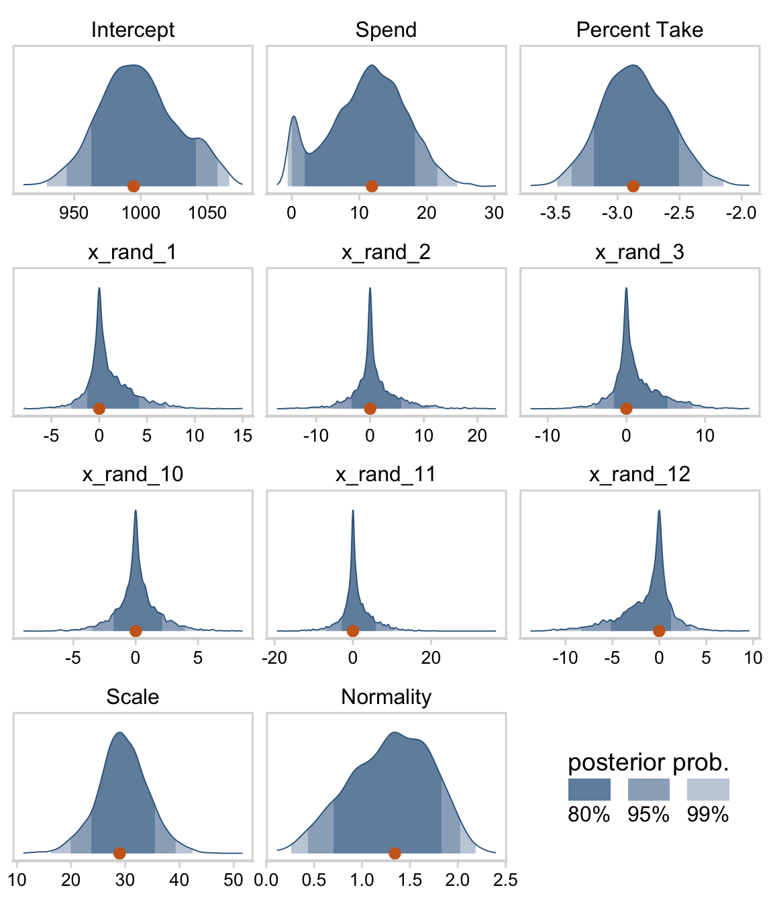
Based on the distributions for the random predictors, it looks like our brms horseshoe prior regularized more aggressively than Kruschke’s hierarchical prior in the text. And interestingly, look how our marginal posterior for Spend is bimodal.
For kicks and giggles, here’s the corresponding coefficient plot for \(\beta_1\) through \(\beta_{14}\).
draws |>
pivot_longer(cols = Spend:x_rand_12) |>
ggplot(aes(x = value, y = reorder(name, value))) +
geom_vline(xintercept = 0, color = "grey25", linetype = 2) +
stat_pointinterval(point_interval = mode_hdi, .width = 0.95,
color = "steelblue4", point_color = "chocolate3", point_size = 4) +
labs(x = NULL,
y = NULL) +
theme(axis.text.y = element_text(hjust = 0))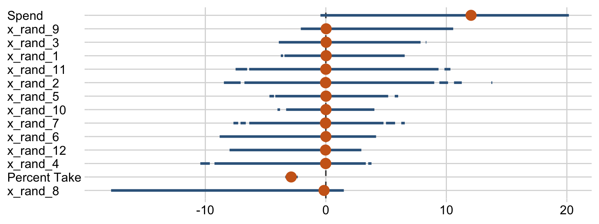
But anyways, here’s that final Bayesian \(R^2\) density for Figure 18.12.
bayes_R2(fit18.5, summary = FALSE) |>
as_tibble() |>
ggplot(aes(x = R2)) +
stat_wilke() +
scale_y_continuous(NULL, breaks = NULL) +
labs(x = NULL,
subtitle = expression(Bayesian~italic(R)^2)) +
coord_cartesian(xlim = c(0, 1),
ylim = c(-0.01, NA)) +
theme(legend.position = c(0.01, 0.8))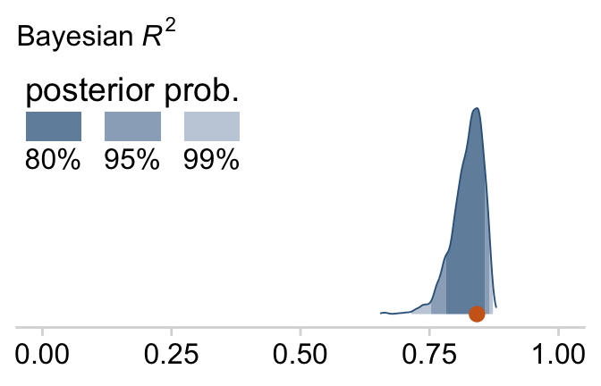
Just recall, though, that our fit18.5 was not exactly like Kruschke’s model. Whereas we hard coded the scale of our Student-\(t\) horseshoe prior to be 1, Kruschke estimated it with help from the gamma distribution. I’m not aware that’s currently possible in brms. If I’m at fault and you know how to do it, please share your code.
18.4 Variable selection
We can rewrite the linear regression model to accommodate whether it includes a predictor as
\[\mu_i = \beta_0 + \sum_j \delta_j \beta_j x_{j, i},\]
where \(\delta\) is a dummy for which 0 = not included 1 = included. I’m not aware of a way to use \(\delta\) as an inclusion indicator in brms the way Kruschke implemented it in JAGS. And in fact, it appears this might be unfeasible within the Stan framework. But if you know of a way, please share your code. However, this issue can lead to a similar approach: information criteria. To do so, let’s follow Kruschke’s basic flow and use the first model from way back in Section 18.1.1 as a starting point. The model formula was as follows.
fit18.1$formulasatt_z ~ 1 + spend_z + prcnt_take_z Taking interactions off the table for a moment, we can specify four model types with various combinations of the two predictors, prcnt_take_z and spend_z. fit18.1 was the first, which we might denote as \(\langle 1, 1 \rangle\). That leads to the remaining possibilities as
- \(\langle 1, 0 \rangle:\)
satt_z ~ 1 + spend_z - \(\langle 0, 1 \rangle:\)
satt_z ~ 1 + prcnt_take_z - \(\langle 0, 0 \rangle:\)
satt_z ~ 1
Let’s fit those models.
fit18.6 <- update(
fit18.1,
formula = satt_z ~ 1 + spend_z,
seed = 18,
file = "fits/fit18.06")The desired updates require recompiling the modelfit18.7 <- update(
fit18.1,
formula = satt_z ~ 1 + prcnt_take_z,
seed = 18,
file = "fits/fit18.07")The desired updates require recompiling the modelfit18.8 <- brm(
data = my_data,
family = student,
satt_z ~ 1,
prior = c(prior(normal(0, 2), class = Intercept),
prior(normal(0, 1), class = sigma),
prior(exponential(one_over_twentynine), class = nu)),
chains = 4, cores = 4,
stanvars = stanvar(1/29, name = "one_over_twentynine"),
seed = 18,
file = "fits/fit18.08")We’ll compare our models with the LOO information criterion. Like other information criteria, the LOO values aren’t of interest in and of themselves. However, the values of one model’s LOO relative to that of another is of great interest. We generally prefer models with lower estimates.
fit18.1 <- add_criterion(fit18.1, criterion = "loo")
fit18.6 <- add_criterion(fit18.6, criterion = "loo")
fit18.7 <- add_criterion(fit18.7, criterion = "loo")
fit18.8 <- add_criterion(fit18.8, criterion = "loo")
loo_compare(fit18.1, fit18.6, fit18.7, fit18.8) |>
print(simplify = FALSE) elpd_diff se_diff elpd_loo se_elpd_loo p_loo se_p_loo looic se_looic
fit18.1 0.0 0.0 -31.9 5.4 4.0 0.7 63.8 10.7
fit18.7 -3.2 2.8 -35.1 4.4 2.7 0.4 70.2 8.8
fit18.6 -37.6 6.3 -69.5 4.0 2.0 0.3 139.0 8.1
fit18.8 -40.9 5.7 -72.8 3.0 1.4 0.2 145.6 6.1 In this case, fit18.1 and fit18.7 clearly have the lowest estimates, but the standard error of their difference score is about the same size as their difference. So the LOO difference score puts them on similar footing. Recall that you can do a similar analysis with the waic() function.
Let’s compare that with the insights from the model_weights() function.
(mw <- model_weights(fit18.1, fit18.6, fit18.7, fit18.8)) fit18.1 fit18.6 fit18.7 fit18.8
8.930782e-01 1.547342e-07 1.069217e-01 9.761130e-10 If you don’t like scientific notation, you can always wrangle and plot.
mw |>
data.frame() |>
rownames_to_column() |>
set_names("fit", "estimate") |>
ggplot(aes(x = estimate, y = reorder(fit, estimate))) +
geom_text(aes(label = round(estimate, digits = 3) |> as.character())) +
scale_x_continuous("stacking weight", limits = c(0, 1)) +
ylab(NULL)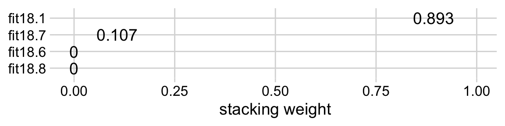
Based on this weighting scheme, almost all the weight went to the full model, fit18.1. But note, in the intro of their vignette on the topic, Vehtari & Gabry (2022) opined:
Ideally, we would avoid the Bayesian model combination problem by extending the model to include the separate models as special cases, and preferably as a continuous expansion of the model space. For example, instead of model averaging over different covariate combinations, all potentially relevant covariates should be included in a predictive model (for causal analysis more care is needed) and a prior assumption that only some of the covariates are relevant can be presented with regularized horseshoe prior (Piironen & Vehtari, 2017). For variable selection we recommend projective predictive variable selection (Piironen and Vehtari, 2017; projpred package).
Perhaps unsurprisingly, their thoughts on the topic are similar with the Gelman et al quotation Kruschke provided on page 536:
Some prominent authors eschew the variable-selection approach for typical applications in their fields. For example, (Gelman et al., 2013, p. 369) said, “For the regressions we typically see, we do not believe any coefficients to be truly zero and we do not generally consider it a conceptual (as opposed to computational) advantage to get point estimates of zero—but regularized estimates such as obtained by lasso can be much better than those resulting from simple least squares and flat prior distributions …we are not comfortable with an underlying model in which the coefficients can be exactly zero.”
For more on some of these methods, check out Vehtari’s GitHub repository, Tutorial on model assessment, model selection and inference after model selection.
But anyways, our model weighting methods cohered with Kruschke’s \(\delta\)-inclusion-indicator method in that both suggested the full model, fit1, and the model with prcnt_take as the sole predictor, fit7, were given the greatest weight. I’m not aware that our information criteria weighting/model stacking methods provide probability distributions of the type Kruschke displayed in the left portions of Figure 18.13. But we can at least recreate the plots in the other panels.
# First we'll get the posterior draws from `fit18.1` and wrangle them
as_draws_df(fit18.1) |>
transmute(Spend = make_beta_j(zeta_j = b_spend_z,
sd_j = sd_x_1,
sd_y = sd_y),
PrcntTake = make_beta_j(zeta_j = b_prcnt_take_z,
sd_j = sd_x_2,
sd_y = sd_y)) |>
pivot_longer(cols = everything()) |>
# Extract and wrangle the posterior draws from `fit18.7`, and then insert them below those from `fit18.1`
bind_rows(
as_draws_df(fit18.7) |>
mutate(value = make_beta_j(zeta_j = b_prcnt_take_z,
sd_j = sd_x_2,
sd_y = sd_y),
name = "PrcntTake") |>
select(name, value)
) |>
# Now we just need a little indexing and factor ordering
mutate(model = rep(c("fit18.1", "fit18.7"), times = c(8000, 4000)),
name = factor(name, levels = c("Spend", "PrcntTake"))) |>
# Plot
ggplot(aes(x = value)) +
stat_wilke(normalize = "panels") +
scale_y_continuous(NULL, breaks = NULL) +
xlab(NULL) +
coord_cartesian(ylim = c(-0.01, NA)) +
panel_border() +
theme(legend.position = c(0.13, 0.23)) +
facet_grid(model ~ name, scales = "free")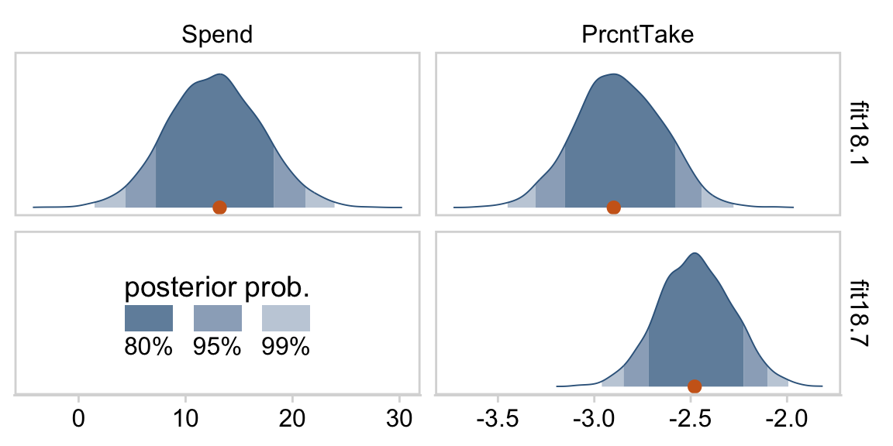
18.4.1 Inclusion probability is strongly affected by vagueness of prior
To follow along, let’s fit the models with the updated \(\textit{SD} = 1\) on the \(\beta_{1+}\) priors code.
fit18.9 <- update(
fit18.1,
prior = c(prior(normal(0, 1), class = Intercept),
prior(normal(0, 1), class = b),
prior(normal(0, 1), class = sigma),
prior(exponential(one_over_twentynine), class = nu)),
chains = 4, cores = 4,
stanvars = stanvar(1/29, name = "one_over_twentynine"),
seed = 18,
file = "fits/fit18.09")
fit18.10 <- update(
fit18.9,
formula = satt_z ~ 1 + spend_z,
seed = 18,
file = "fits/fit18.10")
fit18.11 <- update(
fit18.9,
formula = satt_z ~ 1 + prcnt_take_z,
seed = 18,
file = "fits/fit18.11")
fit18.12 <- update(
fit18.8,
prior = c(prior(normal(0, 1), class = Intercept),
prior(normal(0, 1), class = sigma),
prior(exponential(one_over_twentynine), class = nu)),
seed = 18,
file = "fits/fit18.12")And now we’ll fit the models with the updated \(\textit{SD} = 10\).
fit18.13 <- update(
fit18.9,
prior = c(prior(normal(0, 10), class = Intercept),
prior(normal(0, 10), class = b),
prior(normal(0, 10), class = sigma),
prior(exponential(one_over_twentynine), class = nu)),
seed = 18,
file = "fits/fit18.13")
fit18.14 <- update(
fit18.13,
formula = satt_z ~ 1 + spend_z,
seed = 18,
file = "fits/fit18.14")
fit18.15 <- update(
fit18.13,
formula = satt_z ~ 1 + prcnt_take_z,
seed = 18,
file = "fits/fit18.15")
fit18.16 <- update(
fit18.12,
prior = c(prior(normal(0, 10), class = Intercept),
prior(normal(0, 10), class = sigma),
prior(exponential(one_over_twentynine), class = nu)),
seed = 18,
file = "fits/fit18.16")Now we’ve fit the models, we’re ready to examine how altering the \(\textit{SD}\)’s on the \(\beta_j\) priors influenced the model comparisons via model_weights(). Here we’ll use the default stacking method.
mw |>
rbind(model_weights(fit18.9, fit18.10, fit18.11, fit18.12),
model_weights(fit18.13, fit18.14, fit18.15, fit18.16)) |>
as_tibble() |>
set_names("1, 1", "1, 0", "0, 1", "0, 0") |>
pivot_longer(cols = everything()) |>
mutate(prior = rep(str_c("italic(SD)==", c(10, 2, 1)), times = 4) |>
factor(levels = str_c("italic(SD)==", c(10, 2, 1)))) |>
ggplot(aes(x = value, y = reorder(name, value))) +
geom_text(aes(label = round(value, digits = 3) |> as.character())) +
labs(x = "Stacking weight",
y = expression(paste("Models defined by Kruschke's ", delta, " notation"))) +
coord_cartesian(xlim = c(0, 1)) +
theme(panel.grid = element_blank()) +
panel_border() +
facet_grid(prior ~ ., labeller = label_parsed)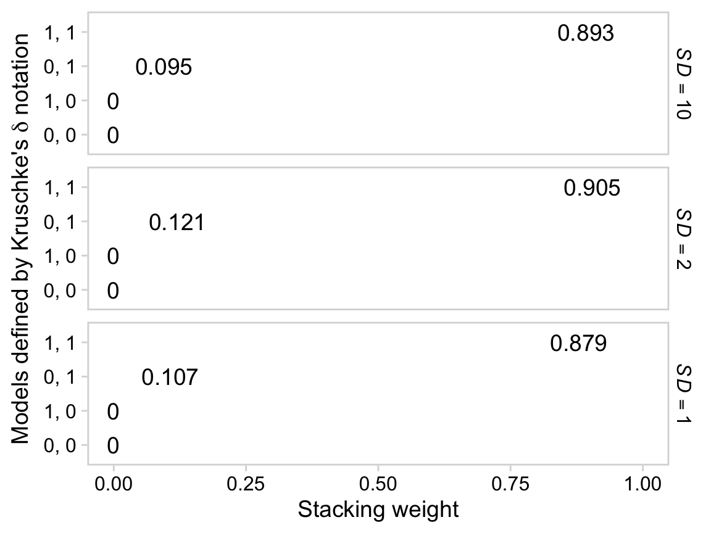
So unlike in the depictions in Figure 18.14, the stacking method was insensitive to the \(\textit{SD}\)’s on our \(\beta_j\) priors. We might compare LOO difference scores, too.
fit18.9 <- add_criterion(fit18.9, criterion = "loo")
fit18.10 <- add_criterion(fit18.10, criterion = "loo")
fit18.11 <- add_criterion(fit18.11, criterion = "loo")
fit18.12 <- add_criterion(fit18.12, criterion = "loo")
fit18.13 <- add_criterion(fit18.13, criterion = "loo")
fit18.14 <- add_criterion(fit18.14, criterion = "loo")
fit18.15 <- add_criterion(fit18.15, criterion = "loo")
fit18.16 <- add_criterion(fit18.16, criterion = "loo")
loo_compare(fit18.1, fit18.6, fit18.7, fit18.8) |>
print(simplify = FALSE) elpd_diff se_diff elpd_loo se_elpd_loo p_loo se_p_loo looic se_looic
fit18.1 0.0 0.0 -31.9 5.4 4.0 0.7 63.8 10.7
fit18.7 -3.2 2.8 -35.1 4.4 2.7 0.4 70.2 8.8
fit18.6 -37.6 6.3 -69.5 4.0 2.0 0.3 139.0 8.1
fit18.8 -40.9 5.7 -72.8 3.0 1.4 0.2 145.6 6.1 loo_compare(fit18.9, fit18.10, fit18.11, fit18.12) |>
print(simplify = FALSE) elpd_diff se_diff elpd_loo se_elpd_loo p_loo se_p_loo looic se_looic
fit18.9 0.0 0.0 -32.0 5.3 4.0 0.8 63.9 10.6
fit18.11 -3.2 2.8 -35.1 4.4 2.7 0.5 70.3 8.8
fit18.10 -37.6 6.3 -69.5 4.1 2.1 0.3 139.0 8.1
fit18.12 -40.8 5.6 -72.7 3.1 1.4 0.2 145.4 6.1 loo_compare(fit18.13, fit18.14, fit18.15, fit18.16) |>
print(simplify = FALSE) elpd_diff se_diff elpd_loo se_elpd_loo p_loo se_p_loo looic se_looic
fit18.13 0.0 0.0 -31.9 5.4 4.0 0.8 63.9 10.8
fit18.15 -3.2 2.9 -35.2 4.4 2.7 0.5 70.3 8.8
fit18.14 -37.7 6.3 -69.7 4.0 2.1 0.3 139.4 8.0
fit18.16 -40.8 5.7 -72.8 3.0 1.4 0.2 145.6 6.0 The LOO difference score patterns were also about the same across the \(\textit{SD}\)’s on our \(\beta_j\) priors. Let’s finish up with our version of the histograms comparing the model predictors. Here’s the code for those in the top portion of Figure 18.14.
# First we get the posterior draws from `fit18.9`, and the wrangle them
as_draws_df(fit18.9) |>
transmute(Spend = make_beta_j(zeta_j = b_spend_z,
sd_j = sd_x_1,
sd_y = sd_y),
PrcntTake = make_beta_j(zeta_j = b_prcnt_take_z,
sd_j = sd_x_2,
sd_y = sd_y)) |>
pivot_longer(cols = everything()) |>
# Within `bind_rows()`, we extract and wrangle the posterior draws from `fit18.11` and
# then insert them below those from `fit18.9`
bind_rows(
as_draws_df(fit18.11) |>
transmute(value = make_beta_j(zeta_j = b_prcnt_take_z,
sd_j = sd_x_2,
sd_y = sd_y),
name = "PrcntTake") |>
select(name, value)
) |>
# Now we just need a little indexing and factor ordering
mutate(model = rep(c("fit18.9", "fit18.11"), times = c(8000, 4000)) |>
factor(levels = c("fit18.9", "fit18.11")),
name = factor(name, levels = c("Spend", "PrcntTake"))) |>
# Plot
ggplot(aes(x = value)) +
stat_wilke(normalize = "panels") +
scale_y_continuous(NULL, breaks = NULL) +
xlab(NULL) +
coord_cartesian(ylim = c(-0.01, NA)) +
panel_border() +
theme(legend.position = c(0.13, 0.23)) +
facet_grid(model ~ name, scales = "free")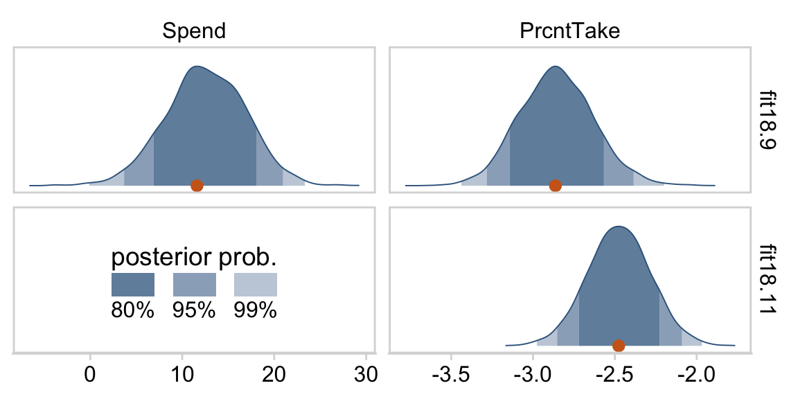
And now we’ll do our version of the histograms for the bottom portion of Figure 18.14.
as_draws_df(fit18.13) |>
transmute(Spend = make_beta_j(zeta_j = b_spend_z,
sd_j = sd_x_1,
sd_y = sd_y),
PrcntTake = make_beta_j(zeta_j = b_prcnt_take_z,
sd_j = sd_x_2,
sd_y = sd_y)) |>
pivot_longer(cols = everything()) |>
bind_rows(
as_draws_df(fit18.15) |>
transmute(value = make_beta_j(zeta_j = b_prcnt_take_z,
sd_j = sd_x_2,
sd_y = sd_y),
name = "PrcntTake") |>
select(name, value)
) |>
mutate(model = rep(c("fit18.13", "fit18.15"), times = c(8000, 4000)) |>
factor(levels = c("fit18.13", "fit18.15")),
name = factor(name, levels = c("Spend", "PrcntTake"))) |>
ggplot(aes(x = value)) +
stat_wilke(normalize = "panels") +
scale_y_continuous(NULL, breaks = NULL) +
xlab(NULL) +
coord_cartesian(ylim = c(-0.01, NA)) +
theme(legend.position = c(0.13, 0.23)) +
panel_border() +
facet_grid(model ~ name, scales = "free")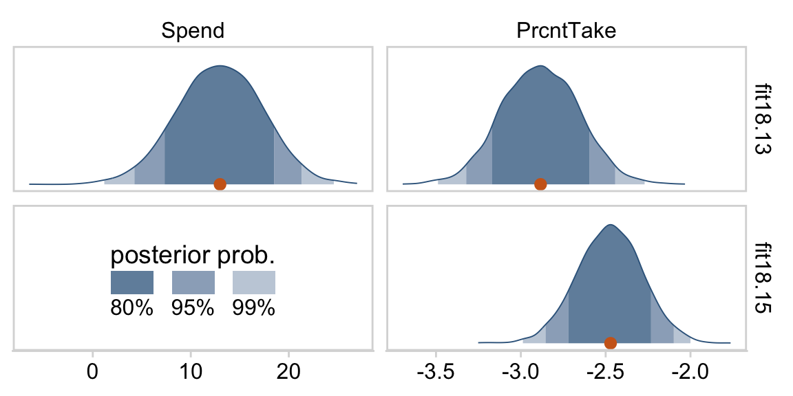
Kruschke concluded this subsection with
Bayesian model comparison can be strongly affected by the degree of vagueness in the priors, even though explicit estimates of the parameter values may be minimally affected. Therefore, be very cautious when interpreting the results of Bayesian variable selection. The next section discusses a way to inform the prior by using concurrent data instead of previous data. (p. 542)
We should note that while the method in text was “strongly affected by the degree of vagueness in the priors”, the information-criteria and model weighting methods, above, were not. If you’re interested in comparing models within the Bayesian paradigm, choose your method with care.
18.4.2 Variable selection with hierarchical shrinkage
Kruschke opened the subsection with a few good points:
If you have strong previous research that can inform the prior, then it should be used. But if previous knowledge is weak, then the uncertainty should be expressed in the prior. This is an underlying mantra of the Bayesian approach: Any uncertainty should be expressed in the prior. (p. 543)
Here we’ll standardize our new predictors, StuTeaRat and Salary.
my_data <- my_data |>
mutate(stu_tea_rat_z = standardize(StuTeaRat),
salary_z = standardize(Salary))We can use Kruschke’s gamma_s_and_r_from_mode_sd() function to return the exact shape and rate parameters to make a gamma with a mode of 1 and an \(\textit{SD}\) of 10.
gamma_s_and_r_from_mode_sd <- function(mode, sd) {
if (mode <= 0) stop("`mode` must be > 0")
if (sd <= 0) stop("`sd` must be > 0")
rate <- (mode + sqrt(mode^2 + 4 * sd^2)) / (2 * sd^2)
shape <- 1 + mode * rate
list(shape = shape, rate = rate)
}Here are the values.
(p <- gamma_s_and_r_from_mode_sd(mode = 1, sd = 10) |> as.numeric())[1] 1.1051249 0.1051249That gamma distribution looks like this.
tibble(x = seq(from = 0, to = 65, length.out = 1e3)) |>
ggplot(aes(x = x, y = dgamma(x, shape = p[1], rate = p[2]))) +
geom_area(alpha = 0.6, color = "steelblue4", fill = "steelblue4") +
scale_y_continuous(NULL, breaks = NULL) +
xlab("Our gamma prior") +
coord_cartesian(xlim = c(0, 60))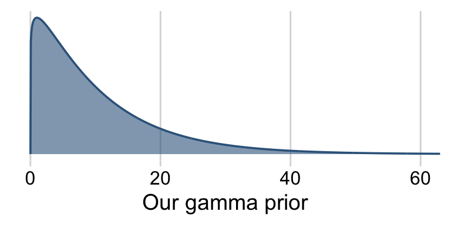
We can code those values in with arbitrary precision with the stanvar() function.
stanvars <- stanvar(1/29, name = "one_over_twentynine") +
stanvar(p[1], name = "my_shape") +
stanvar(p[2], name = "my_rate") +
stanvar(scode = " real<lower=0> tau;", block = "parameters")Note that last stanvar() line. Bürkner recently posted an exemplar of how to set a hierarchical prior on a regression coefficient in a brm() model:
# Define a hierarchical prior on the regression coefficients
bprior <- set_prior("normal(0, tau)", class = "b") +
set_prior("target += normal_lpdf(tau | 0, 10)", check = FALSE)
stanvars <- stanvar(scode = " real<lower=0> tau;", block = "parameters")
make_stancode(count ~ Trt + log_Base4_c, epilepsy,
prior = bprior, stanvars = stanvars)Following the method, we tell brm() we’d like to estimate the \(\textit{SD}\) of our \(\beta_{1+}\) priors with prior(normal(0, tau), class = b), where the tau is a stand-in for the \(\textit{SD}\). In the next line, set_prior("target += gamma_lpdf(tau | my_shape, my_rate)", check = FALSE), we tell brm() we’d like to estimate tau with a gamma(my_shape, my_rate), the values for which were saved in our stanvars object, above. And it’s that stanvar() line in that code wherein we told brm() we’d like that parameter to have a lower bound of 0. Let’s put it to use.
fit18.1111 <- brm(
data = my_data,
family = student,
satt_z ~ 1 + spend_z + prcnt_take_z + stu_tea_rat_z + salary_z,
prior = c(prior(normal(0, 2), class = Intercept),
prior(normal(0, tau), class = b),
set_prior("target += gamma_lpdf(tau | my_shape, my_rate)", check = FALSE),
prior(normal(0, 1), class = sigma),
prior(exponential(one_over_twentynine), class = nu)),
chains = 4, cores = 4,
control = list(adapt_delta = 0.99),
stanvars = stanvars,
seed = 18,
file = "fits/fit18.1111")
fit18.0111 <- update(
fit18.1111,
formula = satt_z ~ 1 + prcnt_take_z + stu_tea_rat_z + salary_z,
file = "fits/fit18.0111")
fit18.1011 <- update(
fit18.1111,
formula = satt_z ~ 1 + spend_z + stu_tea_rat_z + salary_z,
file = "fits/fit18.1011")
fit18.1101 <- update(
fit18.1111,
formula = satt_z ~ 1 + spend_z + prcnt_take_z + salary_z,
file = "fits/fit18.1101")
fit18.1110 <- update(
fit18.1111,
formula = satt_z ~ 1 + spend_z + prcnt_take_z + stu_tea_rat_z ,
file = "fits/fit18.1110")
fit18.0011 <- update(
fit18.1111,
formula = satt_z ~ 1 + stu_tea_rat_z + salary_z,
file = "fits/fit18.0011")
fit18.0101 <- update(
fit18.1111,
formula = satt_z ~ 1 + prcnt_take_z + salary_z,
file = "fits/fit18.0101")
fit18.0110 <- update(
fit18.1111,
formula = satt_z ~ 1 + prcnt_take_z + stu_tea_rat_z ,
file = "fits/fit18.0110")
fit18.1001 <- update(
fit18.1111,
formula = satt_z ~ 1 + spend_z + salary_z,
file = "fits/fit18.1001")
fit18.1010 <- update(
fit18.1111,
formula = satt_z ~ 1 + spend_z + stu_tea_rat_z ,
file = "fits/fit18.1010")
fit18.1100 <- update(
fit18.1111,
formula = satt_z ~ 1 + spend_z + prcnt_take_z ,
file = "fits/fit18.1100")
fit18.0001 <- update(
fit18.1111,
formula = satt_z ~ 1 + salary_z,
file = "fits/fit18.0001")
fit18.0010 <- update(
fit18.1111,
formula = satt_z ~ 1 + stu_tea_rat_z ,
control = list(adapt_delta = 0.99999),
seed = 18,
file = "fits/fit18.0010")
fit18.0100 <- update(
fit18.1111,
formula = satt_z ~ 1 + prcnt_take_z ,
file = "fits/fit18.0100")
fit18.1000 <- update(
fit18.1111,
formula = satt_z ~ 1 + spend_z ,
file = "fits/fit18.1000")
fit18.0000 <- update(
fit18.1111,
formula = satt_z ~ 1 ,
file = "fits/fit18.0000")In order to keep track of the next 16 models, we switched our usual naming convention. Instead of continuing on keeping on calling them fit18.17 through fit18.33, we used Kruschke’s \(\delta\) 0/1 convention. If we set the formula for the full model as satt_z ~ 1 + spend_z + prcnt_take_z + stu_tea_rat_z + salary_z, the name becomes fit18.1111. Accordingly, we called the model omitting spend_z, the first predictor, fit18.0111, and so on.
Before we go any further, here are the correlations among the predictor variables in the full model, fit18.1111.
my_data |>
select(Spend, PrcntTake, StuTeaRat, Salary) |>
cor() |>
round(digits = 3) Spend PrcntTake StuTeaRat Salary
Spend 1.000 0.593 -0.371 0.870
PrcntTake 0.593 1.000 -0.213 0.617
StuTeaRat -0.371 -0.213 1.000 -0.001
Salary 0.870 0.617 -0.001 1.000Notice above that Salary is strongly correlated with Spend, and therefore, a model that includes both Salary and Spend will show a strong trade-off between those predictors and consequently will show inflated uncertainty in the regression coefficients for either one. Should only one or the other be included, or both, or neither? (p. 544)
Behold the model weights.
mw <- model_weights(fit18.1111,
fit18.0111, fit18.1011, fit18.1101, fit18.1110,
fit18.0011, fit18.0101, fit18.0110, fit18.1001, fit18.1010, fit18.1100,
fit18.0001, fit18.0010, fit18.0100, fit18.1000,
fit18.0000)
mw fit18.1111 fit18.0111 fit18.1011 fit18.1101 fit18.1110 fit18.0011 fit18.0101 fit18.0110 fit18.1001 fit18.1010
2.391824e-05 2.528742e-01 8.436610e-07 2.699557e-06 6.975455e-04 8.930595e-05 4.885951e-03 1.773269e-05 1.578355e-05 2.547397e-06
fit18.1100 fit18.0001 fit18.0010 fit18.0100 fit18.1000 fit18.0000
1.808503e-01 1.490489e-01 5.912171e-07 3.216973e-01 8.979243e-02 2.037722e-10 We’ll plot our model weights like before.
mw |>
data.frame() |>
rownames_to_column() |>
set_names("fit", "weight") |>
mutate(fit = str_remove(fit, "fit18.")) |>
ggplot(aes(x = weight, y = reorder(fit, weight))) +
geom_text(aes(label = round(weight, digits = 3) |> as.character()),
size = 3) +
coord_cartesian(xlim = c(0, 1)) +
labs(x = "Stacking weight",
y = "fit18.[xxxx]") +
theme(panel.grid = element_blank()) +
panel_border()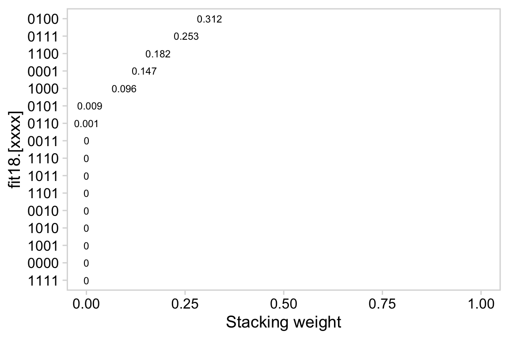
As you might notice, pattern among model weights is similar with but not identical to the one among the model probabilities Kruschke displayed in Figure 18.15. Here we’ll plot the histograms for our top six.
# We need to redefine `sd_x_3` and `sd_x_4` in terms of our two new predictors
sd_x_3 <- sd(my_data$StuTeaRat)
sd_x_4 <- sd(my_data$Salary)
## Now we start extracting our posterior draws and wrangling them, by model
# fit18.0100
as_draws_df(fit18.0100) |>
transmute(Intercept = b_Intercept,
PrcntTake = make_beta_j(zeta_j = b_prcnt_take_z,
sd_j = sd_x_2,
sd_y = sd_y)) |>
pivot_longer(cols = everything()) |>
mutate(fit = "fit18.0100") |>
# fit18.0111
bind_rows(
as_draws_df(fit18.0111) |>
transmute(Intercept = b_Intercept,
PrcntTake = make_beta_j(zeta_j = b_prcnt_take_z,
sd_j = sd_x_2,
sd_y = sd_y),
StuTeaRat = make_beta_j(zeta_j = b_stu_tea_rat_z,
sd_j = sd_x_3,
sd_y = sd_y),
Salary = make_beta_j(zeta_j = b_salary_z,
sd_j = sd_x_4,
sd_y = sd_y)) |>
pivot_longer(cols = everything()) |>
mutate(fit = "fit18.0111")
) |>
# fit18.1100
bind_rows(
as_draws_df(fit18.1100) |>
transmute(Intercept = b_Intercept,
Spend = make_beta_j(zeta_j = b_spend_z,
sd_j = sd_x_1,
sd_y = sd_y),
PrcntTake = make_beta_j(zeta_j = b_prcnt_take_z,
sd_j = sd_x_2,
sd_y = sd_y)) |>
pivot_longer(cols = everything()) |>
mutate(fit = "fit18.1100")
) |>
# fit18.1000
bind_rows(
as_draws_df(fit18.1000) |>
transmute(Intercept = b_Intercept,
Spend = make_beta_j(zeta_j = b_spend_z,
sd_j = sd_x_1,
sd_y = sd_y)) |>
pivot_longer(cols = everything()) |>
mutate(fit = "fit18.1000")
) |>
# fit18.0001
bind_rows(
as_draws_df(fit18.0001) |>
transmute(Intercept = b_Intercept,
Salary = make_beta_j(zeta_j = b_salary_z,
sd_j = sd_x_4,
sd_y = sd_y)) |>
pivot_longer(cols = everything()) |>
mutate(fit = "fit18.0001")
) |>
# fit18.0110
bind_rows(
as_draws_df(fit18.0110) |>
transmute(Intercept = b_Intercept,
PrcntTake = make_beta_j(zeta_j = b_prcnt_take_z,
sd_j = sd_x_2,
sd_y = sd_y),
StuTeaRat = make_beta_j(zeta_j = b_stu_tea_rat_z,
sd_j = sd_x_3,
sd_y = sd_y)) |>
pivot_longer(cols = everything()) |>
mutate(fit = "fit18.0110")
) |>
# The next two lines just help order the grid the plots appear in
mutate(name = factor(name, levels = c("Intercept", "Spend", "PrcntTake", "StuTeaRat", "Salary")),
fit = factor(fit, levels = c("fit18.0100", "fit18.0111", "fit18.1100", "fit18.1000", "fit18.0001", "fit18.0110"))) |>
# Finally, the plot!
ggplot(aes(x = value)) +
stat_wilke(normalize = "panels", point_size = 4) +
scale_y_continuous(NULL, breaks = NULL) +
scale_fill_viridis_d(option = "D", begin = 0.2, end = 0.8) +
xlab(NULL) +
coord_cartesian(ylim = c(-0.01, NA)) +
panel_border() +
theme(legend.position = "none") +
facet_grid(fit ~ name, scales = "free")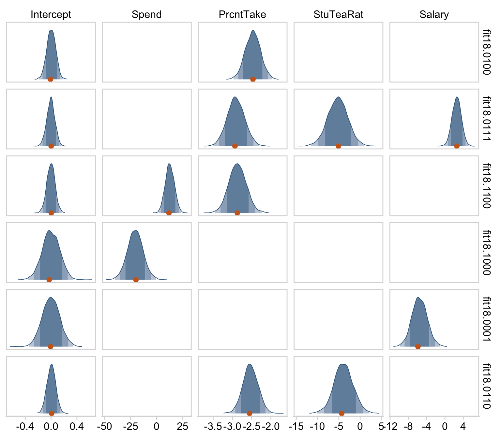
Like Kruschke’s results in the text, PrcntTake was the most prominent predictor.
18.4.3 What to report and what to conclude
Kruschke made a great point in the opening paragraph of this subsection.
It might make sense to use the single most credible model, especially if it is notably more credible than the runner up, and if the goal is to have a parsimonious explanatory description of the data. But it is important to recognize that using the single best model, when it excludes some predictors, is concluding that the regression coefficients on the excluded predictors are exactly zero. (p. 546)
Later he added “A forthright report should state the posterior probabilities of the several top models. Additionally, it can be useful to report, for each model, the ratio of its posterior probability relative to that of the best model” (p. 546). With our information criteria and model weights approach, we don’t have posterior probabilities for the models themselves. But we can report on their information criteria comparisons and weights.
In the final paragraph of the subsection, Kruschke wrote:
When the goal is prediction of \(y\) for interesting values of the predictors, as opposed to parsimonious explanation, then it is usually not appropriate to use only the single most probable model. Instead, predictions should be based on as much information as possible, using all models to the extent that they are credible. This approach is called Bayesian model averaging (BMA). (p. 547)
It’s worth it to walk this out a bit. With brms, one can use brms::pp_average() to get the weighted posterior distributions for the model parameters. This is a natural extension of our model weights comparisons.
# How many points on the x-axis?
n_points <- 30
# What vales of the predictors would we like to evaluate the weighted posterior over?
nd <- tibble(spend_z = seq(from = -3, to = 3, length.out = n_points),
prcnt_take_z = 0,
stu_tea_rat_z = 0,
salary_z = 0)
# The first things we feed into `pp_average()` are the `brm()` fits we'd like to average over
pp <- pp_average(
fit18.1111, fit18.0111, fit18.1011, fit18.1101, fit18.1110, fit18.0011, fit18.0101, fit18.0110,
fit18.1001, fit18.1010, fit18.1100, fit18.0001, fit18.0010, fit18.0100, fit18.1000, fit18.0000,
# Here we tell it to evaluate the posterior over these predictor values
newdata = nd,
# We can get the mean trends using the "fitted" method
method = "fitted",
# By `robust`, we mean we'd like the Estimate in terms of posterior medians, rather than means
robust = TRUE)
str(pp) num [1:30, 1:4] -0.0105 -0.0105 -0.0105 -0.0105 -0.0105 ...
- attr(*, "dimnames")=List of 2
..$ : NULL
..$ : chr [1:4] "Estimate" "Est.Error" "Q2.5" "Q97.5"
- attr(*, "weights")= Named num [1:16] 2.39e-05 2.53e-01 8.44e-07 2.70e-06 6.98e-04 ...
..- attr(*, "names")= chr [1:16] "fit18.1111" "fit18.0111" "fit18.1011" "fit18.1101" ...
- attr(*, "ndraws")= Named num [1:16] 0 1012 0 0 3 ...
..- attr(*, "names")= chr [1:16] "fit18.1111" "fit18.0111" "fit18.1011" "fit18.1101" ...The pp object will require a little wrangling before it’s of use for ggplot2.
pp |>
as_tibble() |>
bind_cols(nd) |>
ggplot(aes(x = spend_z, y = Estimate,
ymin = Q2.5, ymax = Q97.5)) +
geom_hline(yintercept = 0, color = "grey25", linetype = 2) +
geom_pointrange(color = "steelblue4", fatten = 6, fill = "chocolate3",
shape = 21, stroke = 1/10) +
labs(x = "Value of Spend_z",
y = "Standardized SATT")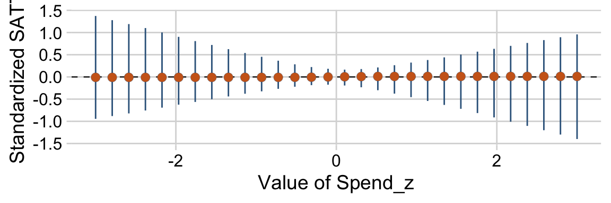
We can build on this to make a plot considering each of the four predictors. But first that requires we make a new nd tibble to feed into pp_average().
# How many points on the x-axis?
n_points <- 30
# What vales of the predictors would we like to evaluate the weighted posterior over?
nd <- tibble(spend_z = c(seq(from = -3, to = 3, length.out = n_points),
rep(0, times = n_points * 3)),
prcnt_take_z = c(rep(0, times = n_points),
seq(from = -3, to = 3, length.out = n_points),
rep(0, times = n_points * 2)),
stu_tea_rat_z = c(rep(0, times = n_points * 2),
seq(from = -3, to = 3, length.out = n_points),
rep(0, times = n_points)),
salary_z = c(rep(0, times = n_points * 3),
seq(from = -3, to = 3, length.out = n_points)))
pp <- pp_average(
fit18.1111, fit18.0111, fit18.1011, fit18.1101, fit18.1110, fit18.0011, fit18.0101, fit18.0110,
fit18.1001, fit18.1010, fit18.1100, fit18.0001, fit18.0010, fit18.0100, fit18.1000, fit18.0000,
newdata = nd,
method = "fitted",
robust = TRUE,
# Note the `probs` argument
probs = c(0.025, 0.975, 0.1, 0.9, 0.25, 0.75))
str(pp) num [1:120, 1:8] -0.0124 -0.0124 -0.0124 -0.0124 -0.0124 ...
- attr(*, "dimnames")=List of 2
..$ : NULL
..$ : chr [1:8] "Estimate" "Est.Error" "Q2.5" "Q97.5" ...
- attr(*, "weights")= Named num [1:16] 2.39e-05 2.53e-01 8.44e-07 2.70e-06 6.98e-04 ...
..- attr(*, "names")= chr [1:16] "fit18.1111" "fit18.0111" "fit18.1011" "fit18.1101" ...
- attr(*, "ndraws")= Named num [1:16] 0 1012 0 0 3 ...
..- attr(*, "names")= chr [1:16] "fit18.1111" "fit18.0111" "fit18.1011" "fit18.1101" ...In each panel of the plot, below, we focus on one predictor. For that predictor, we hold all other three at their mean, which, since they are all standardized, is zero. We consider the posterior predictions for standardized SAT scores across a range of values each focal predictor. The posterior predictions are depicted in terms of 95%, 80%, and 50% percentile-based interval bands and a line at the median.
pp |>
as_tibble() |>
mutate(x = seq(from = -3, to = 3, length.out = n_points) |> rep(times = 4),
predictor = rep(c("Spend_z", "PrcntTake_z", "StuTeaRat_z", "Salary_z"), each = n_points)) |>
ggplot(aes(x = x)) +
geom_hline(yintercept = 0, color = "grey25", linetype = 2) +
geom_ribbon(aes(ymin = Q2.5, ymax = Q97.5),
alpha = 1/5, fill = "steelblue4") +
geom_ribbon(aes(ymin = Q10, ymax = Q90),
alpha = 1/4, fill = "steelblue4") +
geom_ribbon(aes(ymin = Q25, ymax = Q75),
alpha = 1/3, fill = "steelblue4") +
geom_line(aes(y = Estimate),
color = "chocolate3", linewidth = 1) +
labs(x = "Standardized value of the focal predictor",
y = "Standardized SATT") +
theme_minimal_vgrid() +
panel_border() +
facet_grid(predictor ~ ., scales = "free")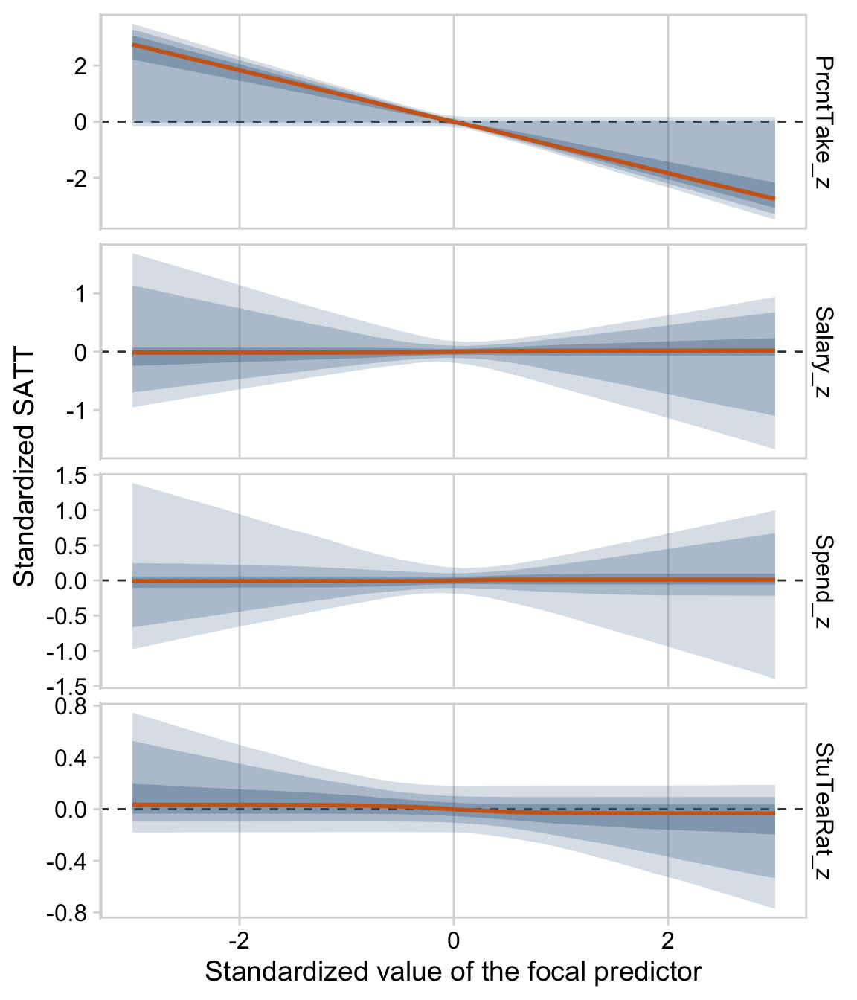
Based on the weighted average across the models, the PrcntTake_z predictor was the most potent.
18.4.4 Caution: Computational methods
To conclude this section regarding variable selection, it is appropriate to recapitulate the considerations at the beginning of the section. Variable selection is a reasonable approach only if it is genuinely plausible and meaningful that candidate predictors have zero relation to the predicted variable. The results can be surprisingly sensitive to the seemingly innocuous choice of prior for the regression coefficients, and, of course, the prior for the inclusion probability. Because of these limitations, hierarchical shrinkage priors may be a more meaningful approach. (p. 548)
18.4.5 Caution: Interaction variables
When interaction terms are included in a model that also has hierarchical shrinkage on regression coefficients, the interaction coefficients should not be put under the same higher-level prior distribution as the individual component coefficients, because interaction coefficients are conceptually from a different class of variables than individual components. (pp. 548–549)
18.5 Bonus: On transforming standardized parameters
We spent a lot of time and code in this chapter (and the last) transforming parameters fit on the standardized \(\zeta\) scale to the un-standardized \(\beta\) scale. Using Equation 18.1 from Section 18.1.2, we made elaborate custom functions designed to help us with those transformations. These transformations served pedagogical purposes for the text, but they may not be necessary for your real-world use cases. Here are a few contexts where it may be fine to leave the parameters in their \(\zeta\) scales:
- If your data are scaled with arbitrary metrics (such as many questionnaire items and sum scores).
- If the \(\zeta\) scale is more meaningful to your target audience.
- If your focus is on variable selection, rather than on the parameters of the variables themselves.
- If you are primarily interested in prediction.
For the latter, we saw in Chapter 17 that one can make predictions on the non-standardized scale from a standardized model with two basic methods. The first method (transform-then-predict), and the one Kruschke focused on in the text, was to first transform the parameters themselves to the un-standardized metric, and then make predictions on the un-standardized scale. The second method (predict-then-transform) we briefly explored was to first make the predictions on the standardized scale, and then un-standardize the values of the predictor inputs and the predictions. In my experience, the predict-then-transform method is often faster, particularly for more complicated models.
Here’s a quick example of the predict-then-transform method using fit18.1. We’ll compute and plot the fitted values for SATT across the full observed range of PrcntTake, holding the other predictor Spend constant at its mean.
# Save the sample values
m_x <- mean(my_data$PrcntTake)
s_x <- sd(my_data$PrcntTake)
m_y <- mean(my_data$SATT)
s_y <- sd(my_data$SATT)
# Define the predictor grid with standardized inputs
nd <- tibble(
prcnt_take_z = seq(from = min(my_data$prcnt_take_z), to = max(my_data$prcnt_take_z), length.out = 101),
spend_z = 0)
# Compute the fitted values on the standardized scale
fitted(fit18.1, newdata = nd) |>
data.frame() |>
bind_cols(nd) |>
# Transform the standardized predictor values to the un-standardized scale
mutate(PrcntTake = prcnt_take_z * s_x + m_x) |>
# Transform the standardized fitted summary values to the un-standardized scale
mutate(across(.cols = c(Estimate, Q2.5:Q97.5), .fns = \(x) x * s_y + m_y)) |>
# Plot the un-standardized fitted line
ggplot(aes(x = PrcntTake)) +
geom_lineribbon(aes(y = Estimate, ymin = Q2.5, ymax = Q97.5),
color = "chocolate3", fill = alpha("steelblue4", 1/2)) +
labs(y = "SATT",
caption = expression(italic(Note)*". Spend held at its mean value."))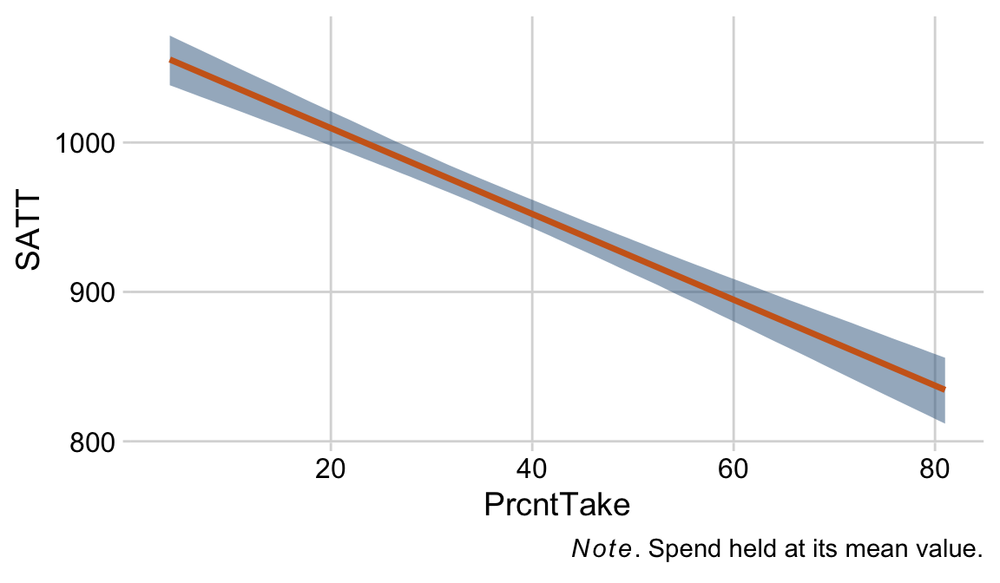
This basic approach will also generalize to polynomial models, hierarchical models, and so on.
Session info
sessionInfo()R version 4.5.1 (2025-06-13)
Platform: aarch64-apple-darwin20
Running under: macOS Ventura 13.4
Matrix products: default
BLAS: /Library/Frameworks/R.framework/Versions/4.5-arm64/Resources/lib/libRblas.0.dylib
LAPACK: /Library/Frameworks/R.framework/Versions/4.5-arm64/Resources/lib/libRlapack.dylib; LAPACK version 3.12.1
locale:
[1] en_US.UTF-8/en_US.UTF-8/en_US.UTF-8/C/en_US.UTF-8/en_US.UTF-8
time zone: America/Chicago
tzcode source: internal
attached base packages:
[1] stats graphics grDevices utils datasets methods base
other attached packages:
[1] GGally_2.4.0 bayesplot_1.14.0 cowplot_1.2.0 ggdist_3.3.3 tidybayes_3.0.7 brms_2.23.0 Rcpp_1.1.0
[8] patchwork_1.3.2 lubridate_1.9.4 forcats_1.0.1 stringr_1.6.0 dplyr_1.1.4 purrr_1.2.0 readr_2.1.5
[15] tidyr_1.3.1 tibble_3.3.0 ggplot2_4.0.1 tidyverse_2.0.0
loaded via a namespace (and not attached):
[1] psych_2.5.6 tidyselect_1.2.1 svUnit_1.0.8 farver_2.1.2 loo_2.8.0
[6] S7_0.2.1 fastmap_1.2.0 TH.data_1.1-4 tensorA_0.36.2.1 digest_0.6.37
[11] estimability_1.5.1 timechange_0.3.0 lifecycle_1.0.4 StanHeaders_2.32.10 survival_3.8-3
[16] magrittr_2.0.4 posterior_1.6.1 compiler_4.5.1 rlang_1.1.6 tools_4.5.1
[21] utf8_1.2.6 yaml_2.3.10 knitr_1.50 labeling_0.4.3 bridgesampling_1.1-2
[26] htmlwidgets_1.6.4 mnormt_2.1.1 curl_7.0.0 pkgbuild_1.4.8 bit_4.6.0
[31] plyr_1.8.9 RColorBrewer_1.1-3 multcomp_1.4-29 abind_1.4-8 withr_3.0.2
[36] grid_4.5.1 stats4_4.5.1 colorspace_2.1-2 inline_0.3.21 xtable_1.8-4
[41] emmeans_1.11.2-8 scales_1.4.0 MASS_7.3-65 cli_3.6.5 mvtnorm_1.3-3
[46] rmarkdown_2.30 crayon_1.5.3 generics_0.1.4 RcppParallel_5.1.11-1 rstudioapi_0.17.1
[51] reshape2_1.4.4 tzdb_0.5.0 rstan_2.32.7 splines_4.5.1 parallel_4.5.1
[56] matrixStats_1.5.0 vctrs_0.6.5 V8_8.0.1 Matrix_1.7-3 sandwich_3.1-1
[61] jsonlite_2.0.0 hms_1.1.4 arrayhelpers_1.1-0 bit64_4.6.0-1 glue_1.8.0
[66] ggstats_0.11.0 codetools_0.2-20 distributional_0.5.0 stringi_1.8.7 gtable_0.3.6
[71] QuickJSR_1.8.1 pillar_1.11.1 htmltools_0.5.8.1 Brobdingnag_1.2-9 R6_2.6.1
[76] vroom_1.6.6 evaluate_1.0.5 lattice_0.22-7 backports_1.5.0 rstantools_2.5.0
[81] gridExtra_2.3 coda_0.19-4.1 nlme_3.1-168 checkmate_2.3.3 xfun_0.53
[86] zoo_1.8-14 pkgconfig_2.0.3 Footnote
When your criterion variable is a count, you typically model it with the Poisson likelihood. We’ll get some practice with the Poisson likelihood in Chapter 24. Though we won’t cover this in this text, it turns out the Poisson makes some strong assumptions. The negative binomial likelihood is sometimes used as a robust alternative to the Poisson when those assumptions are violated. Sadly, we won’t cover negative-binomial regression at all in this ebook. If you’d like to learn more, check out either edition of McElreath’s Statistical Rethinking (2015, 2020), my brms translations of those texts (Kurz, 2023a, 2023b), the authoritative text by Agresti (2015), or the great tutorial paper by Atkins et al. (2013).↩︎
It’s also sometimes described as the squared multiple correlation coefficient.↩︎